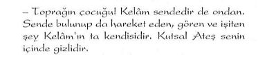

Mısır, kadim çağlarda "Kutsal Bilim"in en önemli merkezlerinden biri ve insanlığı aydmlatan büyük inisiyeleri yetiştiren bir okuldu... Bu merkezde yetişenler arasında bazı filozoflar da bulunmaktadır Ancak şurası bir gerçek ki, bu merkezlerde yetişenlerin sadece çok küçük bir kısmı hakkında bir bilgiye sahip bulunmaktayız. Bir zamanlar Mısır'da yaşananlar dünya tarihinin en gizli kalmış konularından biridir Ve bir zamanlar burada yaşananların büyük bir bölümü günümüzde hâlâ gizliliğini korumaya devam etmektedir O dönemlerde mabetlerden dışarıya sızdırılmamaya özen gösterilen sırlar o denli iyi muhafaza edilmiştir ki, bazı filozof ve peygamberlerin bu merkezlerde yetiştirildikleri bile açıkça insanlık tarihinde yer bulamamıştır. Înisiyeler için bir zamanlar yeryüzünü aydınlatmış olan "Osirisin Işığı" bugün terkedilmiş mabetlerde artık sönmüş durumdadır Thot'un binlerce yıl öncesinden söylemiş olduğu kehanet niteliğindeki şu sözleri, bugün tam anlamıyla gerçekleşmiş bulunmaktadır: Ey Mısır! Gelecek kuşaklara senden hatıra olarak sadece inanılmaz masallar kalacaktır ve seninle ilgili olarak geriye, taşlara oyulmuş kelimelerden başka bir şey kalmayacaktır…
Evet... Taşlara oyulmuş bir tarih... Bu taş sayfaların üzerine işlenmiş hiyeroglifler arkeologlar ve tarihçilerce bugün çözümlenebilmiştir. Ama bütün bunlara rağmen ortada yine de önemli bir sorun kalmıştır:
Bu gizemli tarihin ve kültürün sırlarına nüfuz etmek...
Bu sır, rahiplerin ezoterik öğretilerine ilişkin bir sırdır ve bu sırları gün ışığına çıkartabilmek için Mısır İnisiyasyonu'nun gizli yolunu aydınlığa çıkartmak gerekir. İşte bunu yapabilmek için şimdi tarihin geçmiş dönemlerine geri dönüyor ve bir zamanlar Mısır'daki mabetlerin içinde yaşananları gözümüzün önünde canlandırmaya başlıyoruz:
Tarih: M.Ö. 1300'ler... Ramses dönemi... Musa Peygamber'in de Mısır'da yaşadığı dönem, işte bu dönemdi...
Yunan kentlerinden, Trakya'dan, Anadolu'dan ve Mezopotamya'dan kopup gelen çok sayıda insan, mabetlerinin ününü duyduğu Mısır'a gelmekten kendilerini alamıyordu...
Menfis'e vardıklarında gördükleri karşısında büyülü bir dünyanın içinde kendilerini buluyorlardı. O kendine has kıyafetli insanlar, haşmetli yapılar ve halk şenlikleri onlara Mısır'ın zenginliğini ve bolluğunu göstermeye yetiyordu. Mabedin en iç bölümünde büyük bir gizlilik içinde yapılan kutsama ayininden çıkıp, on iki Mısırlı'nın taşıdığı tahtırevanına binen Firavun'u ilgiyle seyrediyorlardı... Tahtın önünde yüıüyen bir grup rahip, altın nakışlı bir yastığın üzerine konmuş kraliyet nişanı "Koç Başlı Asa "yi taşıyorlardı. Tahtın arkasında ise, genç rahip adayları geliyordu... Önde giden rahiplerin başlarındaki beyaz taç ve göğüslerinden sarkan mükemmel bir işçilik ürünü olan koç ve aslan nişanları, onları seyredenleri adeta büyülüyordu. Gece olunca bayraklarla donanmış sandallarda Nil'in kıyılarında yanan meşalelerin altında konser veren çalgıcı grupların eşliğinde dansözler raks etmekteydiler. Olup bitenleri hayranlıkla izleyenler bu dansın ve müziğin gizemli dünyasında farklı bir şeyler olduğunu hemen sezinliyorlardı. Dansta kesinlikle cinsellik teması değil, insanın ruhuna hitabeden öğeler olduğu derhal farkediliyordu. Mabede girmeye hak kazananlar müziğin ve dansın nasıl insanın arınmasında bir yöntem olarak kullanıldığını daha sonra anlayacaklardı. Şu anda sadece bu gizemli müziği ve gizemli dansı uzaktan seyretmekle yetinen adaylar, serin çöl akşamının sihirli dünyasına kendilerini bırakıyorlardı. Görünüm ve atmosfer muhteşemdi... Gelenler sihirli ve büyülü bir dünyanın kendilerini içinde buluveriyorlardı. Burası gerçekten de masallar dünyasındaki büyülü bir yaşamın hüküm sürdüğü bir ülke izlenimi uyandırıyordu. Ama bütün bunlar, Mısır'ı görmeye gelmiş olan kişinin aradığı şeyler değildi... Onlar görünen büyülü atmosferin değil, mabetlerin derinliklerinde yaşanan görünmeyen büyülü dünyanın peşindeydiler. Onca yolu aşıp buralara gelmelerinin asıl nedeni, mabetlerin derinliklerinde saklanan sırlara sahip olmaktı. Bunun hiç de kolay bir iş olmadığını ve belki de bu sırlara hiçbir zaman dokunamadan buradan gitmek zorunda kalacaklarını da biliyorlardı. Çünkü bu sırlara sahip olabilmek için çok çetin sınavlardan geçirilecekleri, kendilerine önceden söylenmişti. Niceleri gelmiş ve elleri boş dönmüştü... Mabedin kapısmdan bile içeri girememişlerdi...
- "Acaba ben mabedin kapısından içeri girebilecek miyim.'
- "Peki ya mabede girdikten sonra nelerle karşı laşacağım.'
- "Ya vaz geçer de çıkmak istersem?"
İşte Nil kıyısında meşalelerin altında, müziğin eşliğinde dans edenleri seyrederken tüm bu sorular, buraya ilk kez gelenlerin zihninden garip bir kuşkuyla peş peşe akıp gidiyordu!...
Nice aday "Yoksa buraya hiç gelmemeli miydim?" diye kendi kendisine sormaktan kendisini alamıyordu... Yoksa vakit henüz erkenken buralardan çekip gitmeli miydi? Bu kadar endişeye ve kendilerini bekleyen bilinmezliğin stresine katlanmaya değer miydi? Yıllarını acaba ne uğruna harcayacaktı?...
Yıllarca kalacakları ve asla bu süre içinde mabetten dışarı çıkamayacakları, bilinmeyen bir serüvene doğru yaklaştıklarını artık daha kuvvetli hissetmeye başlamışlardı. Artık Mısır'daydılar ve sabah olunca bu yolda ilk adımı atacaklardı!...
Yaşamlarının büyük bir dönüm noktasıydı bu. Ve birçokları için artık geri dönüş yoktu...
Mısır mabetlerinde özel çalgılar ve özel melodilerle astral arınma çok önemli bir yer tutuyordu. Ayrıca mistik müzik eşliğinde gerçekleştirilen arındırıcı özellikte olan danslar vardı. Rahipler bu danslar eşliğinde kendilerinden geçerlerdi. Serin çöl akşamlarında ya da günlük ritüeller sırasında mabetlerin duvarlarını aşardı müziğin sesi. En çok kullanılan enstrümanlar sistrum ve el zilleriydi. Bunlardan sonra harp ve aynı anda çalman bir çift flütten oluşan "oloi" gelirdi.
İnisiyasyona kabul her yılın belirli dönemlerinde toplu olarak törenler eşliğinde yapıldığından, gelen adaylar önce belli bir yerde misafir ediliyor ve burada bekletiliyordu. Bu süre içinde kenti dolaşabiliyorlar ve akşam olunca da misafir edildikleri yere geri dönüyorlardı. Böylelikle Mısır'ın atmosferine yavaş yavaş ısınmaya başlıyorlardı.
İşte yine o günlerden birinin akşamıydı...
Yarın sabah inisiyasyona kabul işlemleri başlayacaktı. Bu düşünceler içinde yattıklarında "Sırlar Dünyası"na atacakları ilk adımın heyecanı herkesi kaplamıştı...
Biraz da korkmadıklarını söylemek mümkün değildi...
Çünkü buraya gelmeden önce sırlarla karşılaşmaya hazır olmayanların mabetlerin derinliklerinde akıllarını yitirdikleri, delirdikleri ile ilgili o kadar çok şey anlatılmıştı ki!...
Peki ya kendisi sırlarla karşılaşmaya hazır mıydı?...
Umut, merak, endişe ve korku ile karışık duygular içinde yataklarına yattılar. Gözlerini kapattıklarında Mısır'ın o sihirli dünyası belirdi...
Değişik kıyafetli insanları ve hiçbir yerde görmedikleri yapılarıyla; çok farklı bir yerde olduklarını artık gayet iyi biliyorlardı...
İşte bu düşüncelerle herkes o geceyi yarı uyuyarak, yarı uyanık geçirmişti...
Gelenleri karşılayan mabedin rahipleri, adayları teker teker alarak Başrahibin yanına götürmekteydiler.
"Sırlar Öğretisi"ne inisiye olmak için gelen adaylar mabedin kapısını çaldığında, her biri ayrı ayrı mülakata alınmak için, hizmetkârların eşliğinde iç avlunun dev sütunlu giriş bölümüne götürülmekteydi. Burada gelenleri karşılayan mabedin rahipleri adayları teker teker alarak Başrahibin yanına götürmekteydiler. Her gelen adayla Başrahip bizzat ilgilenmekteydi. Adaylar teker teker ön görüşmeye alındığında, Başrahip tarafından kendisine görünüşte sıradan sayılabilecek bir takım sorular yöneltilmekteydi. Osiris rahibi ona doğum yeri, ailesi ve daha önce eğitim gördüğü mabetlerle ilgili çeşitli sorular yöneltmekteydi...
Evet...
Görünüşte son derece sıradan gelebilecek bu ön mülakat, aslında adayın geçtiği ilk sınavdı... Çünkü Başrahip bu görüşme sırasında adayın astral yapısına varıncaya kadar onu kısa ancak net bir psişik sentezden geçirmekteydi. Bu kısa sınav sonucunda baş rahip mabedin kapısını çalmış olan adayın "Sırlar Öğretisi"ne katılmasına uygun olmadığı sonucuna vardıysa, sessiz fakat kararlı bir hareketle adaya hiçbir şey söylemeden, kibarca kapıyı işaret etmekteydi. Bu aday için her şeyin sonu demekti. Derhal diğer rahipler tarafından mabetten dışarı çıkartılır ve ''Sırlar Öğretisi"nt inisiye olma şansı ebediyen sona ererdi. Adaylarda aranan niteliklerin en Önemlisi, sırlarla karşılaşabilecek kapasiteye sahip olup olmadıklarıydı. Adayın iyi niyetli ve "Sırlar Öğretisi" ile karşılaşmaya çok hevesli olması yeterli değildi. Aranan en önemli özellik, astral yapısının bu çalışmaya uygun olup olmamasıydı. Kötü niyetli ya da elde edeceği sırları negatif alanlarda kullanabilecek eğilimdeki adayların ise zaten hiç bir şansları yoktu. Bu durumları Başrahip tarafından anında algılandığı için, bu tür kişiler de mabetten derhal uzaklaştınhrdı. Bu ön elemeden geçebilenler, kısa bir aranın ardından rahipler tarafından yine teker teker çağrılmakta ve adaydan Başrahibi izlemesi istenmekteydi. Her ikisi birlikte ilerleyerek, sütunlu giriş bölümlerinden ve iç avlulardan geçip, her iki yanı dikili taşlar ve sfenkslerle donatılmış bulunan üstü açık bir yolu izleyerek küçük başka bir mabede varmaktaydılar. Bu, yeraltı dehlizlerine giriş kapısı olma özelliğine sahip bir mabetti. Mabedin kapısının hemen yanında normal bir insan boyutunda olan bir Isis heykeli gelenleri karşılıyordu. Kucağında kapalı bir kitap tutan İsis heykeli yere oturmuş meditasyonyapar durumdaydı. Yüzünü ise bir peçe örtüyordu. Heykelin alt bölümünde ise şu satırlar yazılıydı:
"Benim peçemi hiçbir ölümlü kaldıramamıştır."
Adayla birlikte kapının önüne kadar gelen Başrahip, adaya dönerek onun korkusuzluğunu ve kararlılığını sınamak için insanın tüylerini ürperten bir konuşma yapardı:
Bu sözleri heyecanla dinleyen aday, gerçekten de ciddi bir durumla karşı karşıya bulunduğunu artık çok daha derinden hissetmeye başlardı. Aday tüm bu uyarılara rağmen kararlılığını sürdürür ve mabede girmek istediğini söylerse, Başrahip bir hafta sonra yeniden bu kapının önüne getirileceğini ve ancak o zaman bu kapıdan içeri girmesine izin verileceğini söyleyerek, onu dış avluya geri götürüp, oradaki hizmetkârlara teslim ederdi. Bu noktada vaz geçenler ise, hiçbir zorlukla karşılaşmadan derhal mabedin dışına çıkartılırdı. Bu noktada mabetten çıkmaya karar verenlerin sayısı bir hayli fazla olmuştur. Mabette kalmaya karar verenler bir hafta boyunca hemen hemen hiçbir şey yapmadan, sadece mümkün olduğunca zihnini temizlemeye ve negatif duygu ve düşüncelere kesinlikle zihninde yer vermemeye özen göstererek hizmetkârların gözetiminde bulunurlardı. Bu süre içinde adaylar belirli zamanlarda bir araya getirilirlerdi. Ancak onlardan istenen tek şey, kesinlikle hiç konuşmamak ve mutlak bir sessizlik içinde bulunmaktı. Her bir adayın kendisine ait bir odası bulunur ve zamanlarının çoğunu ya bu odada, ya da mabedin avlusunda diğer adaylarla birlikte geçirirlerdi. Bir haftalık bekleme süresi ilk başta hiç bir şey yapılmadan geçen bir süre gibi görünse de bu süre içinde hiç konuşmadan sadece kendi iç dünyasıyla adayın baş başa kalması sağlanmış olunuyordu. Böylelikle bu süre içinde aday kendi içindeki her türlü endişeyi yeterince tahlil etme imkânına ulaşabiliyordu. Aceleye getirilmiş ve bir anlık kararla adayın mabede girmesinin önü alınmaya çalışılıyordu. Bu bir haftalık bekleme süresinin bir başka yararı daha vardı. Bu süre içinde aday, mabedin sahip olduğu enerji alanının içinde yaşama imkanına ulaşabiliyordu. Böylelikle mabedin aurasıyla ilk teması gerçekleştirilmiş olmaktaydı. Bu, aday için mabedin enerjileri altında yıkanma anlamına geliyordu. Hiç konuşmadan geçen bir haftanın sonunda, asıl sınava tutulacakları gün gelip çatmaktaydı. Sınav akşamı adaylar her zaman olduğu gibi yine teker teker ahnarak gizli mabedin kapısının önüne getirilirlerdi. Ancak bu kez Başrahip değil, henüz eğitimleri devam eden "Neokor"ismi verilen genç rahip adayları kendilerine eşlik ederdi. Kendisine eşlik eden iki rahiple birlikte daha önce Baş-rahiple kapısında konuştuğu küçük mabede geldiklerinde, mabedin kapısını diğer rahipler açarak, adayı içeriye alırlardı. Mabedin kapısı çok karanlık bir hole açılmaktaydı... Duvarlarda aralıklı olarak yanmakta olan meşalelerin zayıf ışığı, holün her iki yanındaki heykelleri zar zor görülebilecek kadar aydınlatabiliyordu... Son derece kasvetli ve iç karartıcı bu holün duvarlarının dibine sıralanmış insan vücutlu aslan, boğa, kartal, yılan başlı heykeller ortamı daha da esrarengiz bir hâle sokuyordu. Aday çevresini saran bu büyülü atmosfer karşısında içinin ürpermesine engel olmakta zorluk çekse de, çok özel bir yerde olduğunu artık tüm benliğinin derinliklerinde hissetmeye başlıyordu. Hiçbir şey konuşmadan yürümeye başladıklarında sanki holün sonu hiç gelmeyecekmiş gibi görünüyordu... Uzun bir yürüyüşün sonunda; yüzleri birbirine dönük ayakta duran bir mumyayla, bir iskeletin bulunduğu bir alan yer almaktaydı. Burası holün sonuydu... Ancak ilk bakışta her tarafı duvarlarla kapalı çıkmaz bir sokağa gelindiği düşünülebilirdi. Tam bu sırada o ana kadar hiç konuşmayan rahipler yine hiç konuşmadan sadece elleriyle; karşıdaki duvarda dikkatlice bakılırsa meşalelerin ışığında zar zor görülebilen bir deliği işaret etmekteydiler. Duvardaki bu delik ancak sürünülerek derlenebilecek kadar alçak ve küçüktü. Adaya buradan içeri girmesi işaret edilmekteydi. Bu sırada rahiplerden birinin sesi duyulmaktaydı:
Hala daha geri dönebilirsin... Mabedin kapısı henüz kapanmış değil. Ama sen hala devam etmekte kararlıysan, bu delikten geçip geri dönmemecesine yola devam etmek zorundasın...
Seni daha öncede uyarmıştık. Bu son uyarımız. Şu anda geri dönmek istersen seni geri götürebiliriz...
Aday tüm cesaretini toplayıp: "Devam ediyorum" derse, bunun üzerine rahipler ona yanmakta olan bir kandil verip geldikleri holden geri dönerek, mabedin kapısın büyük bir gürültüyle kapatarak, adayı orada yalnız başına bnakıyorlardı. O kasvetli holün sonundaki duvarın dibindeki nereye açıldığı belli olmayan deliğin önünde aday bir anda tek başına kahveriyordu... Yapabileceği tek bir şey vardı. Elindeki kandilin yağı bitmeden bir an önce o delikten içeri girip yeraltındaki delhizlerde ilerlemek... Artık tereddüte yer yoktu. Elindeki kandille birlikte zorlukla sürünerek dehlizde ilerlemeye başlıyordu. Zorlukla ilerlemeye çalışırken dehlizin derinliklerinden gelen bir sesle bir an duraksıyordu.
"Sırlar Bilimine ve kudrete göz diken akılsızlar burada telef olup giderler"
Gerçekten de moral bozucu ve tedirgin edici bir sözdü bu... Üstelik belirli aralıklarla tam yedi kez mükemmel bir akustik etki ile tekrarlanmaktaydı. Ancak yapılabilecek bir şey yoktu. Mabedin kapısı bir kez kapanmıştı artık. İlerlemekten başka çaresinin olmadığı ortadaydı. Bu tehdide rağmen ilerlemek gerekiyordu. Sürünerek ilerlediği dehliz gittikçe genişlemekte ve daha kolay ilerlemesine olanak sağlıyordu. Ama bu sefer de gittikçe aşağıya doğru dikleşerek inen bir eğim hâlini almaktaydı. Gözüpek yolcu sonunda kendisini dibinde kuyu olan bir çukurun içinde buluyordu. Çukurun içindeki bu kuyudan aşağıya doğru demir bir merdiven sarkıtılmıştı. Merdivenin sonu da, kuyunun dibi de görünmüyordu!... Elindeki ışık ancak birkaç basamak aşağısını aydınlatabiliyordu. Dikkatle merdivenden aşağıya doğru inen aday, bir süre sonra basamakların bittiğini ancak kuyunun derinliklere doğru devam ettiğini görmekteydi. Titreyen eliyle sımsıkı tutmaya çalıştığı kandilinin ölgün ışığı sonsuz karanlığın içinde aciz kalmaktaydı!...
Merdivenin basamakları bitmiş ancak kuyunun sonuna varamamıştı. Yukarıya tırmanıp geldiği yerden geri dönebilirdi. Ama kendisine kapının bir daha asla açılmayacağı söylenmişti!... Daha fazla da aşağıya inemiyordu. Öylece orada onu altında bekleyen korkunç karanlıkla baş başa kalıvermişti...
Böyle bir çaresizlik içinde kalacağını hiç aklına getirmemişti. Her şeyin bittiğini zannettiği bir anda, tam karşısında zayıf ışıkta zorlukla farkedilebilen bir oyuğun ve bu oyuğun içinde de basamaklar olduğunu farketmekteydi. Bir merdiven!... Buradan kurtuluş yolu!... Derin bir nefes alıp, derhal o tarafa doğru yönelmekte, böylece uçurumdan kurtulmaktaydı. Tüm bu yaşadıklarının girmiş olduğu mabette yıllar sürecek inisiyasyonunun saflıalarını sembolize ettiğini henüz anlayacak durumda değildi. Çoğu zaman gerçekler hep insanın gözü önündedir ama insanlar bunu göremedikleri için anlayamamaktadır. Aynen demin yolunu son anda farketmesi gibi... Ancak bütün bunları şu anda düşünecek durumda olmayan aday, tedirginlik içinde yoluna devam etmek zorundaydı.
Şu anda içinde bulunduğu basamaklar rahatça ayakta durup tırmanmaya müsait bir yapıdaydı. Spiral çizerek yukarılara doğru tırmanan bir dehlizde ilerleyen adayın önü, bronz parmaklıklarla kesilirdi. Parmaklıkların hemen ardında ise meşalelerle gayet iyi aydınlatılmış, üstü Mısır İnisiyasyonu'na ait sembollerle süslenmiş oldukça yüksek ve heybetli sütunlarla desteklenmiş geniş bir alan bulunmaktaydı. Parmaklıklara kadar gelen adayı orada "Pastafor" ismi verilen ve Mısır İnisiyasyonu'nda "Kutsal Sembol Muhafızı" olarak tanımlanmakta olan bir rahip karşılamakta; sevecen ve insana güven veren bir yüz ifadesiyle parmaklıkları açıp onu içeriye alırdı. Mabetteki ilk sınavını başarıyla bitirip, buraya kadar gelme cesareti gösterdiği için onu kutlayıp, galerideki kutsal resimlerin anlamlarını anlatmaktaydı. Böylelikle aday, ilk inisiyatik bilgilerini almaya başlamış oluyordu... Bu, adayın mabette aldığı ilk dersti. Mabedin " Kutsal Sembol Muhafızı" tarafından adaya aktarılan ilk bilgilerin çok az bir kısmı açık, büyük bir bölümü ise kapalı bir şekilde adaya açıklanırdı. İlk başta oldukça karmaşık bir görünüme sahip olan bu bilgileri, adayın o an anlayabilmesi kesinlikle mümkün değildi. Anlatılanları sadece dinliyor ve ne anlama geldiğini zihninde bir yerlere oturtmaya çalışıyordu ama bu anlatılanlar öylesine sembolik bir dile sahipti ki, bu sembolleri içselleştirebilmek için adayın yıllar sürecek bir eğitimden geçmesi gerekiyordu. Zaten o an için adaydan da bu anlatılanları tam olarak idrak etmesi beklenmiyordu. Tüm sembolik bilglerde olduğu gibi bu bilgiler de, kat kat bohçalanmış bir özelliğe sahipti. Her bir adayın bu bohçalardan kaç katını açabileceği tamamen kendi kapasitesine bağlıydı .
Meşalelerin aydınlattığı holün çevresinde sıralanan devasa taş sütunların üzerine işlenmiş tam yirmi iki kabartma heykel bulunmaktaydı. Hepsinin de altında bir harf ve bir sayı bulunmaktaydı. Mevcut yirmi iki heykel yirmi iki (emel sun sembolize etmekte ve "Ezoterik Bilimin Alfahesi'ni" oluşturmaktaydı. Bunlar evrensel prensiplerin anlaşılmasında anahtar olabilecek sırlara karşılık geliyordu. Bu lisanda her hart ve her sayı, ilâhi alemde, ruhsal alemde ve fizik alemde yansıınaları olan üç ögeli bir yasayı ifade etmekteydi.
ilk sınavın ardından, meşalelede gayet iyi aydınlatılmış, üstü Mısır inisiyasyonu'na ait sembollerle süslenmiş oldukça yüksek ve heybetli sütunlarla desteklenmiş geniş salonda aday kendisine yapılan ilk açıklamalarla karşılaşmaktaydı. "Ezoterik Bilim'in Alfabesi"ni oluşturan mevcut yirmi iki heykel yirmi iki temel sırrı sembolize etmekteydi.
"Kutsal Sembol Muhafızı" bunu adaya şu şekilde anlatmaktaydı:
"Kutsal Sembol Muhafızı"nın bu sözleri aslında tüm evrende varolan ve yeryüzünde de geçerli olan çok önemli majik bir yasayı anlatmaktaydı.
Bu yasa "aşağısı yukarıya, yukarısı aşağıya benzer" sözleriyle Ezoterizm'de ifade edilen kozmik bir prensiptir. Bu aynı zamanda evrenin her köşesinde hep aynı tarzda işleyen yasaların varlığına işaret eder. Bu sırrı bilen bir Osiris rahibi, yeryüzünde belli bir konsantrasyonla ve belli bir bilinç düzeyi içinde kutsal alfabeye uygun belli bir sözcüğü telaffuz ettiğinde; kozmik bir etkiyi, ya da ruhsal bir gücü harekete geçirebilmekteydi. Bu yolla mucizevi diye nitelendirilen pek çok fenomen gerçekleştirilebilmekteydi.
Bu tam anlamıyla majik bir uygulamaydı.
İşte "Kutsal Sembol Muhafızı"nın adaya anlatmaya çalıştığı sır buydu...
Günümüzde sihirli olduğu dilden dile dolaşarak gelen "Abrakadabra", "Okus Pokus" gibi bazı sözcükleri hepimiz duymuşuzdur. Aslında bu inanışın altında yatan gerçek yukarıda aktarmaya çalıştığımız ve majinin önenıli bir bölümünü oluşturan bu evrensel prensibe dayanmaktadır. Kuşkusuz ki, halk arasında dilden dile dolaşarak gelen bu kalıplaşmış sözcüklerin bugün için hiçbir majik etkisi yoktur Ancak bir zamanlar bu tür kelimelerin mabetlerde kullanıldığını biliyoruz. Günümüze kadar gelen bu inanışın kökeni işte bu eski kültürlerin ezoterik bilgilerine dayanır, Ezoterizm'de bu konu "Ses'in Gücü" ya da "Ses Majisi" başlıkları altında ele alınmıştır. Dini Öğretiler'de karşımıza çıkan "Dua mekanizması "nın kökeni de, yine bu prensiple bağlantılıdır Bu prensip tüm dinlerin ezoterik içeriklerinde gizlenmiş ancak halka bu prensip hiç bir zaman açık olarak anlatılmamıştır. Sadece ibadetlerin bir parçası olarak bu teknik halka aktarılmıştır..
Her dinsel öğretide kullanılan duaların sahip oldukları bir enerji kapasiteleri vardır. Ancak bu enerjileri onların orjinal dillerinde okunduklarında ortaya çıktığı unutulmamalıdır. Majik yönü bir hayli gelişmiş olan Mısır İnisiyasyonu'nun önemli yazılı belgelerinden biri olan Mısır'ın Ölüler Kitabı'nda da bu tür dua ve ilâhiler vardır. Ancak bunların tercümeleri, yukarıda açıkladığımız nedenden dolayı aynı etkiye sahip değillerdir. Bu konuya tekrar döneceğiz...
"Kutsal Sembol Muhafızı" adaya "Gizli Sayılar Bilimi" ile ilgili bilgileri aktarmaya başlamadan önce şunları söylemekteydi:
Kutsal yolun yolcusu şunu hiç bir zaman unutmaz İnsanlar ölümlü Tanrılar, Tanrılar ise ölümsüz İlahlardır. Bu sözlerin ardından, "Kutsal Alfabe" ve "Sayılar Bilimi" ile ilgili ilk bilgileri adaya aktarmaya başlardı:
Gizli mahzendeki 1 No'lu sır buydu işte...
1 No'lu sırrın üzerinde yazıldığı heykel ise, elinde asa ve başında altın taç bulunan beyaz giysili bir Maj ile temsil edilmekteydi. Böylelikle adaya ilk sır aktarılmış olmaktaydı: ''İnsan Tanrısı'na benzemektedir. Bir başka deyişle insanda Tanrısal bir güç gizlidir."
Bu sırrın daha sonra gelen çeşitli toplumların dinsel öğretilerinde de farklı sembollerle dile getirilmiş olduğunu görmekteyiz.
Örneğin:
Eski Yunan'da: Tanrı insanın içinde uyumaktadır... Ve inisiyasyonla bu gizli güç uyandınlabilir.
Müslümanlık'ta: Hiçbir yere sığmayan Tanrı, mümin kulunun kalbine sığmaktadır. "Biz size şah damarınızdan da yakınız" sözüyle bu durum Kur'an-ı Kerim'de de dile getirilmiştir.
Örnekleri çoğaltmak mümkün ama konumuzu fazla uzatmak istemiyorum... Biz Mısır'daki mabedimize tekrar geri dönelim...
Teker teker tüm sütunları ve bunlara karşılık gelen "Kutsal Alfabe" ile "Sayılar Bilimi"nin sırlarını adaya aktaran "Kutsal Sembol Muhafızı" sözlerini bitirdikten sonra, holde bulunan bir kapıyı açarak adayı oraya davet ederdi. Ancak adayı davet ettiği yer, dibinde harlı bir ateşin alev alev yandığı; merdivenlerle inilen genişçene bir çukurluğa açılan bir odaydı. Oraya indiğinde ne olacağı belliydi... Ve bu ölüm demekti!...
Mabede girdiği andan itibaren, kayıtsız şartsız her istenileni yapması gerektiğinin bilincindeydi. Göstereceği en ufak bir tereddütün, inisiyasyonunun da sonunu getireceğinin farkındaydı. Bu kuralı gayet iyi biliyordu ama bu sefer işin ucunda ölüm vardı... Aday ne yapacağını şaşırmış bir vaziyette hocasına bakarken, "Kutsal Sembol Muhafızı" devreye girmekte ve şunları söylemekteydi:
Bu sözün hemen ardından "Kutsal Sembol Muhafızı" "Sırlar Galerisi"nin bronz parmaklıgınuı arkasına geçip ağır ağır kapıyı kapatarak oradan uzaklaşırdı. Artık aday "Sırlar Galerisi"nde yine tek basınadır. Bronz parmaklıklı kapının kapanmasıyla adayın geri dönüş şansı da engellenmekteydi. Artık önünde sadece tek bir çıkış yolu kalmıştı. O da dibinde alevlerin bulunduğu ateş çukuruydu!...
İster istemez o anda tüm adayların aklına, az önce mabedin derinliklerinden yansıyan şu söz geliyordu: "Sırlar Bilimi'ne ve kudrete göz. diken akılsızlar burada telef olup giderler!..."
- "Yoksa sırlarla karşılaşmaya layik olmadığımı anladılar ve beni bu yüzden ateşe atmak mı istiyorlar!..."
Zihninden böyle düşünceler geçen birçokları paniğe kapılmakta, korku içinde bağırıp çağırmaya ve kendisini buradan çıkartmaları için yalvarmaya başlamaktaydı. Böylelikle işte tam bu noktada, sınavı kaybetmekte ve derhal mabedin hizmetkârlarınca bulunduğu yerden çıkartılmaktaydı. Eğer cesaretini toplayıp ateş odasına doğru yürüyebilirse, aslında bütün bu olup bitenlerin bir illüzyondan ibaret olduğunu anlamakta gecikmemekteydi. Çünkü uzaktan gördüğü alevlerin büyük bir bölümünün ışık gölge oyunlarıyla yapılmış görüntüler olduğunu farketmekteydi. Orada bulunan gerçek alevlerin ise, rahatlıkla arasından geçebileceği kadar bir mesafede olduğunu anlamaktaydı. Adayı böylesine zor bir durumla karşı karşıya bırakmalarının iki amacı vardı:
Birincisi, yaşamın birçok alanının aynen burada olduğu gibi büyük bir illüzyondan ibaret okluğunu, bu sembolik oyunla adaya aktarmaktı. Evet buradan adayın çıkartması gereken birinci ders yaşamın sadece görünenden ve zannedilenden ibaret olmadığıydı...
Bu sınavdan beklenen ikinci amaç ise; sonu ölüm bile olsa, "Sırlar Bilgisi"ne doğru yürüyüşüne devam etme kararlılığını gösterip gösteremeyeceğinin anlaşılmasıydı. Bu aynı zamanda eğitmenlerine kayıtsız şartsız kendisini teslim edip etmediğinin de bir göstergesini oluşturmaktaydı. Eğitmenlerine duyduğu güven bu şekilde test edilmekteydi. İşte bu kararlılıkla ateş odasına doğru yürüyebilen aday, sonunda alevlerin arasından rahatlıkla geçip, kendisini bir başka galeride buluyordu. Bu galeride ise kendisini simsiyah bir su beklemekteydi. Ne kadar derin olduğu ve içinde ne olduğu dışarıdan anlaşılamayan bu sudan da geçip yoluna devam etmesi gerekmekteydi. İçinde ne olduğu belli bile olmayan kapkaranlık bu sudan geçme cesareti gösterebilen adaylar için önemli bir merhale atlatılmış olmaktaydı. Ama bu henüz mabede kabul edildikleri anlamına gelmiyordu. Daha önlerinde geçmeleri gereken başka engeller kendilerini beklemekteydi. Ne var ki, onlar henüz bunu bilmiyorlardı...
Özellikle de tüm bu zorlukların bittiği zannedildiği bir anda kendilerini bekleyen bir başka zorulu sınav belki de her şeyin sonunu getirecekti...
Önce ateş sonra da su sınavından başarıyla geçebilen adaylar, iki rahip tarafından karşılanmaktaydı. Rahipler adayı alıp, kubbeli geniş bir odaya götürmekteydi. Burada hizmetkârlarca banyo yapmasına olanak sağlanır, üstü başı iyice temizlendikten sonra, güzel kokular sürülen adaya, Mısır'a özgü bir modelde hazırlanmış ince keten bir cüppe giydirilmekteydi. Odada bulunan son derece rahat bir yatakta uzanıp dinlenebileceğini, daha sonra Başrahip'in gelip kendisiyle görüşeceğini söyledikten sonra hizmetkârlar odayı terkederlerdi.
Artık derin bir nefes alma zamanıdır...
Yorgunluk ve stresten o ana kadar bitkin düşen aday bu sükûnet ortamında rahat bir nefes alıp, yatağına serilmekteydi. Geçtiği dehlizlerde gördükleri ve yaşadıkları teker teker gözlerinin önünden geçmekte ve acaba bundan sonra ne olacak diye düşünmekten de kendisini alamamaktaydı...
Bu düşünceler içinde tam içi geçip uykuya dalmak üzereyken, mabedin derinliklerinden gelen, insanda cinsellik temasını uyandıran müzik nameleriyle tekrar kendisine gelmekte ve neler olup bittiğini anlamaya çalışmaktaydı. Tam bu sırada yavaş yavaş odanın karanlık bir bölümünden kendisine doğru yaklaşmakta olan bir bayanın silueti, tüm zihnini allak bullak ediyordu!?... Pembe bir tüle bürünmüş, boynunda muskası olan Sudanlı bir kadındı bu... Sol elinde bir kupa tutmakta ve adaya şehvetli gözlerle bakmaktaydı. Çıkık elmacık kemekleri, kırmızı etli dudakları, loş ışıkta parlayan gözleri adayın aklını başından almak üzereydi ki, aday ne yapacağını şaşmnış bir vaziyette yerinden kalkıp ellerini yüzüne kapatıp, öylece donup kalmaktaydı. Bir mabette, hele ki bir Mısır mabedinde bir kadına yaklaşmak... Olacak şey değildi... Bütün bunlar yetmiyormuş gibi kadın, adayın işini iyice zorlaştırmaya çaba sarfedermişcesine yanına iyice yaklaşarak, "Yabancı benden korkuyor musun? Sana galiplerin ödülünii, mutluluk kupasını getirdim. Yorgunluğunu giderir." diyerek elindeki içki ile dolu kupayı uzatmaktaydı. Aday kupayı alıp almamakta tereddüt ederken, kadın yavaşça yatağa oturup adayı süzmeye devanı ediyordu. O etli dudakların üzerine eğilenin, o bronzlaşmış omuzlardan etrafa yayılan mis gibi kokulara kendisini kaptıranın vay haline! Elini kadının eline sürdüğü ve dudaklarını o kupada ıslattığı anda, iş çığırından çıkıvermekle ve aday kendisini sarmaş dolaş halde yatakta bulmaktaydı. Ama olan olup, arzusunu tatmin ettikten sonra, daha önce kupadan içtiği sıvı, adayı derin bir uykuya sevketmekte, uyanmca da darmadağınık yatağının içinde, yanlış bir şeyler yapmış olmanın huzursuzluğu içinde kendisini yapayalnız bulmaktaydı.
Tam o sırada, kapı açılmakta, odaya ağır adımlarla Başrahip girmekte ve adaya hitaben şunları söylemekteydi:
Bu her şeyin sonu demekti... Ne mabetten dışarı çıkıp geldiği ülkesine geri dönebilmekte, ne de inisiyasyona devam edebilmekteydi. Bu artık mabedin bir hizmetkârı olarak ölünceye kadar burada kalması anlamına geliyordu. Kendisine o ana kadar sıradan bir insanın bilmemesi gereken bazı sırlar aktarılmış olduğu ve mabedin sınavlarına şahit olduğu için dışarıya çıkmasına kesinlikle müsade edilemezdi. Çünkü bunları dışarıda başkalarına anlatma ihtimali vardı. Ketumiyet yasası gereği artık o ömrünün sonuna kadar burada tutulacaktı. Böyle bir sonuçla karşılaşabileceği kendisine daha önce defaatlarca hatırlatılmış ve o da bunu kabul etmişti. Yapılacak bir şey yoktu!... Ve ne yazık ki, affedilme ihtimali de... Çünkü Mısır mabetlerinde işler affedilme, affedilmeme, ceza ya da mükâfat sistemlerine göre yürümüyordu. Burada her şeyin bir karşılığı vardı ve bu harfiyen uygulanıyordu. Kayırma diye bir şey zaten söz konusu bile olamazdı...
Kurallar vardı ve bu kurallara herkes uymak zorundaydı. Eğer aday, tüm bunların bir sınavın parçası olduğunu unutmayıp, duygularına bir an için yenilmeyerek kupayı eliyle itip, kadını reddetseydi, o anda ellerinde meşalelerle 12 rahip gelip onu alacaklar ve yarım daire oluşturacak şekilde dizilmiş ve beyaz giyisiler giyinmiş olan Majlar'ın tam mevcutla bekledikleri İsis Mabedi'ne görkemli bir şekilde götüreceklerdi. Fakat bu sınavı atlatamayanlar, ömürlerinin sonuna kadar mabedin hizmetkârlığını yapmak kaderiyle baş başa kalmaktaydılar. Tüm bu yaşananlar aslında adayın mabede kabul töreninden başka bir şey değildi. Bu törenin en önemli özelliği, adayın burada yaşadığı her sınav ve her aşama, bundan sonra geçeceği inisiyasyonun safhalarını sembolize etmesiydi. Yani kısaca özetlemek gerekirse, mabette kalacağı uzun yıllar boyunca yaşayacaklarının tamamı, kısa bir özet tarzında adaya önceden sembolik bir şekilde gösterilmiş olmaktaydı. Ve bütün bu tören boyunca inisiyasyonunda karşılaşacağı tüm zorluklar adaya bir sınav tarzında gösterilmekte ve ne kadar zor bir işe giriştiği kendisine aktarılmaktaydı. İşte tüm bu zorlukları yenmeye göğüs germe cesaretini gösterenlerin dahil edildiği "Sırlar Öğretisi"ne, aday bu şekilde kabul edilmiş oluyordu.
Bu nedenle de, tüm bu yaşananlara Ezoterizm'de "İnisiyasyona Kabul Ritüeli" adı verilmektedir.
Mükemmel bir şekilde aydınlatılmış olan İsis Mabedi'nin tam merkezinde göğsünde altın bir gül ile, başında yedi ışınlı bir taç bulunan dev bir İsis Heykeli bulunmaktaydı. "Sırlar Öğretisi "ne kabul sınavlarından başarıyla geçenler işte bu heykelin önünde kendisini bekleyen Başrahip tarafından karşılanmaktaydı. Başrahip, yeni rahip adayını göstermiş olduğu kararlı tutumundan dolayı kutladıktan sonra, çevresinde Majlar'ın sıralandığı bir başka İsis Heykeli'nin önüne getirmekte ve burada sır saklayacağına ve mabedin kurallarına iteatkâr davranacağına dair yemin ettirilmekteydi. İşaret parmağıyla dudaklarını kapatmış "sus" işareti yapan İsis Heykeli'nin önünde gerçekleştirilen bu yemin töreninden sonra Başrahip, tüm mabet üyeleri adına inisiye adayını selamlar ve "Sırlar Öğretisi"ne kabul edildiğini açıklardı. Adayın İsis İnisiyasyonu ve sonrasında Osiris înisiyasyonu'yla devam edeceği eğitimin ilk adımı böylelikle atılmış oluyordu... Aday inisiyasyonun ancak eşiğine basmış olmaktaydı. Çünkü önünde uzun yıllar sürecek olan bir öğrenim ve çıraklık dönemi vardı...
O günden sonra İsis Mabedi'nde kendisine ait bir oda tahsis edilmekte ve zamanının büyük bir bölümünü burada kendisine öğretilen kurallara göre meditasyon yaparak geçirmekteydi. Bunun haricinde mabedin dershanesinde Hiyeroglif Alfabeyi öğrenmekte ve kendisiyle ilgilenen rahiplerden çeşitli konularda dersler almaktaydı. Bu ilk dersleri "Sırlar Öğretisi" ile yakından ilgili olmayan çeşitli konuları kapsıyordu. Mineral ve bitki bilimi, dünya tarihi, tıp, mimari ve kutsal müzik; ders aldığı konuların başında geliyordu. Çıraklık dönemi olarak isimlendirilen bu dönem, yıllar süren oldukça uzun bir süreyi kapsamaktaydı. Bu süre içinde kendi iç gelişmesiyle ilgili yaptırılan çalışmaların temelini, meditasyon ve konsantrasyon egzersizlerinin de yardımıyla; kendini tanımak ve kendi duygu ve düşüncelerine hakim olma çalışmaları oluşturmaktaydı.
Ruhsal arınma, inisiyatik çalışmaların en önde gelen hedefiydi. Ancak bu nihayi hedefe ulaşabilmek için öncelikle negatif duygu ve düşüncelerden arınmak gerekmekteydi. Bunun için de uyguladıkları çeşitli arınma ritüelleri vardı. Arınma ritüellerinde hedeflenen amaç, fiziksel ve zihinsel arınmanın gerçekleştirililebilmesiydi. Zihinsel ve fiziksel arınma için tüm dünyada olduğu gibi, Mısır mabetlerinde de su kullanılırdı. Su ile temizlenmek kirlerden arınmak için kullanıldığı gibi aynı zamanda fizyolojik ve psikolojik arınma için de kullanılan bir yöntemdi. Zihinsel temizlik için bu yöntem Mısır'da bilinçli olarak uygulanmaktaydı. Mabetlerde bu işlem için büyük özel havuzlar yapılmıştı. Suyla temizlenmenin negatif tesirlerden arındırma etkisi vardır. Bu fizyolojimiz üzerinde bize son derece olumlu etkilere yol açar. Gün içindeki olumlu olumsuz deneyimlerimiz, çeşitli maddelerin cildimize yapışıp kalmasına sebep olur. Sinir ve stresten de kaynaklanan bu kimyasal izler silinmedigi takdirde, vücut bu negatif tesirlerin etkisinden kuıtulamamaktadır. Bu da ruhsal huzur ve dengeye kavuşmak için önemli bir engel teşkil etmektedir. İşte Mısır mabetlerinde suyla arınmadan kastedilen bu kimyasal partiküllerden kurtulmaktı. Mısır'daki mabetlerde suyun bu anndırıcı etkisini çoğaltmak için küçük kapların içindeki suya, rahiplerce yoğun manyetik enerjiler de yüklenirdi. Böylelikle suyun zihinsel arındırıcı etkisinin çoğaltılması sağlanmış olurdu. Bu suyla adaylara auralarını güçlendirici ve koruyucu manyetik enerjiler aktarılmaktaydı..
Vücut ve ağız bölgesine Tabi Sodyum Karbonat, alın bölgesine ise muhtelif yağların sürülmesi gibi zihinsel ve fizyolojik arınma için Mısır mabetlerinde kullanılan başka yöntemler de vardı. Zihinsel ve fiziksel negatif paıtiküllerden arınmanın bir diğer yöntemi de çimen ya da kumlar üzerinde güneş veya ay ışığında yürümekti. Bu şekilde yürümek ya da uzanmak da negatif etkileri yok etmekte, arındırmakta ve adayı enerjiyle doldurmaktaydı.
Fazlalıkların terk edilmesi de bir diğer çalışma egzersizlerini oluşturmaktaydı. Bu kapsamda dünyasal arzu ve isteklerden terk çalışmaları, mabetteki yaşamının önemli bir parçası olmaya başlıyordu. Terk yoluyla kazanılacak gücün, iç potansiyelinde birikmesi hedeflenmekteydi. Biriken bu enerji, psişik etkinliğini gözle görülür bir şekilde artırmaya başlıyordu. Bu gelişme, sadece onu gözleyen rahiplerce değil, kendisi tarafından da rahatlıkla hissedilebiliyordu. O ilk geldiği günden bu yana pekçok şey değişmişti. Sezgileri her geçen gün biraz daha artmış, daha önce kullanmadığı bazı algılama yetenekleri ortaya çıkmaya başlamıştı... Çevresindeki insanların bedenlerini kaplayan ışıltılı haleler gün geçtikçe daha da belirginleşiyordu. Hatta rüyaları bile farklılaşmıştı. Adeta görünmeyen bir gücün etkisi altına girmiş ve bu güç hem dıştan hem de içten kendisini sarıp sarmalıyordu. Bu süreç içinde öğrenci sürekli olarak gözetim altında tutulmakta ve geçirdiği içsel gelişim izlenmekte, ona uygun yeni aşamalara geçilmekteydi. Sert kurallara uymaya mecbur edilen öğrenci, kendi egosunu bizzat kendisi kırarak, mürşitlerine kendisini teslim etmekteydi. Ondan mutlak itaat istenmekteydi. Mabedin eğitimcileri tarafından ne istenirse tartışmasız bir şekilde aday bunu yerine getiriyor, hiç değilse yerine getirmek için elinden gelen tüm çabayı gösteriyordu...
Kurallara uymak temel kuraldı.
Bu disipline uyan adaylara, bu süreç içinde "Sırlar Öğretisi" ile ilgili mürşitlerince pek sınırlı ifşaatlarda bulunulmaktaydı. Bu, eğitimin genel prensibini oluşturan bir diğer faktördü. Kendisine aktarılan bir sırrı öğrenci iyice içine sindirmeden, bir diğer sır kesinlikle kendisine açıklanmamaktaydı. Yeni bilgilere uyum göstermesi için öğrenciye ihtiyacı olan süre fazlasıyla tanınırdı. Açıklanan her bir sına uyum gösterme süreci adaydan adaya farklılık gösterdiği için her aday ayrı ayrı gözlemlenmekte ve içinde bulunduğu durum tahlil edilmekteydi. Bu eğitim biçimi, mabede toplu olarak kabul edilen adaylar arasında belli bir ayrımın ortaya çıkmasına neden olmaktaydı.Yani bir aday henüz inisiyasyonun birinci aşamasını daha tamamlayamadan, bir diğer aday inisiyasyonun üçüncü ve son aşamasına kadar yükselebiliyordu. Bu farklılık göz önüne alınarak, adaylar kendilerine uygun gruplara dahil ediliyordu. Bu, o denli dikkatle uygulanırdı ki, bazen uzun bir süre geçmesine rağmen öğrenci kendisine yeni bilgiler verilmemesine şaşırır ve "acaba bende iyi gitmeyen bir şeyler mi var" diye düşünmekten kendisini alamazdı. Hatta mürşitlerin kayıtsız davrandıklarını bile zannedebilirdi. Endişelerinin ve sorularının cevabı olarak hep şu cümleyle karşılaşırdı:
- "Bekle ve çalışmana devam et... "
Bu sözü her duyuşunda, içinde aniden başkaldırma arzusu, üzüntü ve şüphe uyanıveriyordu.
"Büyük ümitlerle geldiği bu mabette yoksa kara maji ehlinin kulu kölesi mi olmuştu?!..."
"İradesine hükmederek meçhul bir felâkete doğru mu sürükleniyordu?"
"Yoksa... Bütün bunlar sadece birer saçmalıktan mı ibaretti?..."
Zihninden geçmesine engel olamadığı bu sorular her geçen gün gittikçe içini daha da Fazla kemirmeye başlıyordu...
Ancak onun fark etmediği ve bilmediği bir şey vardı. Kendisine kayıtsız kaldığını zannettiği mürşitleri sürekli olarak onu telepatik olarak izlemekte ve geçirdiği ruh hâllerini takip etmekteydiler. îşte böyle anlarda onu izleyen mürşitleri ona iç enerjisini ve ilhamını kuvvetlendirici manyetik enerjiler yollayarak, içine düştüğü kabuslardan kurtulmasına yardımcı olmaktaydılar. Bu yardımlar sayesinde, olup bitenleri daha iyi anlamaya başlıyordu. Kendisine kendisinin haberi bile olmadan yollanan bu manyetik enerjiler sayesinde, en zor anlarında birden bire kendisine gelerek, iç sıkıntılarından bir anda arınıveriyordu.
Bu psişik yardımlar aynı zamanda sezgilerinin de daha güçlenmesine zemin hazırhyordu. Ve bu sayede bir zamanlar kendisini eğiten rahiplere sorduğu pekçok sorunun cevabına, kendi içinden gelen seslerle ulaşabiliyordu. Böylelikle daha önce sorduğu tüm sorulara niçin rahiplerce "bekle ve çalışmana devam et" dendiğini daha iyi anlamaya başlıyordu. Çünkü aradığı cevapların dışardan değil, kendi içinden çıkıp geldiğini görüyor ve bu da kendisine olan güveninin artmasına neden oluyordu. Mabede girebilmek için maruz bırakıldığı çetin sınavların sembolik anlamlarını da işle bu "iç aydınlanma anları"nda çok daha iyi anlayabiliyordu. Mabede giriş sınavında yaşadıkları mabette daha sonra yaşayacaklarının tam bir özetiydi...
Sınav sırasında içine düşmekten kıl payı kurtulduğu kapkaranlık uçurumun daha sonra içine düşeceği çelişkilerin sembolü olduğunu şimdi çok iyi anlıyordu. Şurası bir gerçek ki, sınavda karşılaştığı o karanlık dipsiz kuyu bile, şimdi zaman zaman yaşadığı o şüphe ve korkuların yanında daha aydınlık kalmaktaydı...
İçinden geçtiği ateş de onu şimdi yakan ihtiraslarından daha az korkunç görünmekte ve içine atlamak zorunda kaldığı o soğuk ve karanlık su bile, ona içini doldurup kendisini sıkboğaz eden şu şüpheden daha az soğuk gelmekteydi.
Sınav gecesi kendisine yeraltı mahzenlerinde anlamlarının açıklandığı o gizemli yirmi iki sırrı sembolize eden heykellerin aynıları, bu kez mabedin bir salonunda iki sıra halinde tekrar karşısına çıkmıştı. ''Sırlar Öğretisi"nin henüz daha eşiğindeyken kendisine son derece üstü kapalı bir şekilde anlatılan bu sırlarla ilgili daha sonra tek bir söz bile edilmemişti. Bunlarla ilgili ne zaman bir soru soracak olsa neredeyse azarlanırcasına itilip kakılmış ve tek bir açıklama bile alamamıştı.
"Bekle ve gör" denmişti her seferinde... Evet... "Bekle ve gör..." Bunun artık bir sabır işi olduğunu gayet iyi anlamaya başlamıştı. Sabretmeden, fazlalıklarını terk etmeden ve arınmadan sırlarla karşılaşamayacaktı... Bunu açıkça kendisine söylememişlerdi ama o içe doğuş anlarında edindiği en önemli bilgilerden biri bu olmuştu. Zamanı gelmeden sırlarla temas etmesi mümkün değildi. Peki ne kadar bir zamana ihtiyacı vardı? En çok merak ettiği şeylerin başında bu geliyordu. Buna ne kendi içinden, ne de mürşitlerinden bir cevap alamıyordu. Demek ki bunun için de beklemesi gerekmekteydi. Aklı sürekli olarak o yirmi iki sırra ve temsil ettiği heykellere takılıp kalıyordu. Eğer bunlarla ilgili bilgiler üstü örtülü de olsa geçtiği sınavın sonunda kendisine açıklandıysa ve bu sınav aynı zamanda geçeceği inisiyasyonun saflıalannı anlatan sembolik bir bilgiye de sahipse, o halde ortaya şöyle bir sonuç çıkmaktaydı:
Belki de edineceği sırların temelini oluşturan bu yirmi iki sırrın gerçeğine inisiyasyonun ancak sonunda ulaşabilecekti. Bunu anlaması oldukça uzun bir süreye malolmuştu ama artık çok iyi biliyordu ki, bunlar Mısır İnisiyasyonu'nun temellerini oluşturmaktaydı. Ve bu sırların neler olduğunu anlayabilmesi için inisiyasyonun tamamını kat etmek gerekiyordu. Burada da sabır, karşısına dikilmişti... Sabretmeli ve beklemeliydi. Ve bu arada sabretmeyle ilgili de bir şeyler keşfetmeye başlamıştı. Sabretmenin basit anlamda köşesine çekilip bekleme olmadığmı, tam tersine kendisinin göstereceği çaba ve çalışmayla geçen bir süreci kapsaması gerektiğini fark etmişti... Şimdi mürşitlerinin kendisini neden terketmiş gibi göründüklerini daha iyi anlıyordu. Rahipler de sabrederek kendisinin belli bir yol kat etmesini bekliyorlardı... O içe doğan aydınlanma anlarının birinde fark ettiği gerçeklerden biri de buydu işte...
Yirmi iki sırrı sembolize eden heykellerle ilgili, o günden beri mürşitlerinin hiç biri ona tek bir kelime bile söylememişti ama bu heykellerin bulunduğu salonda gezinip, bu resimler üzerinde konsantre olup, derin derin düşünmesine izin verilmisti. Orada bazen saatlerce tek başına kalmaktaydı... Heykellerdeki ciddiyet ve kararlılık, Mısır'ın o kendisine özgü sanatıyla adeta hayat bulmuştu. Bu, heykellerin görünen kısmıydı. Bu kadarı bile insanda hayranlık uyandırmaya yetiyordu... Büyüleyici sanatsal güzelliklerinin ötesinde temsil ettikleri sırlar ve o sırların enerjisi onlarla bütünleşmiş durumdaydı... Onlara bakanlar o enerjiyi ruhlarının derinliklerinde hissetmekte, o enerjiler onu seyredenin gönlüne dolmaktaydı...
Her biri evrenin ve yaşamın bir alanını yönetip yönlendiren kozmik prensipleri ifade eden bu "Mısır'ın Kutsal Sembolleri" rahipler için evrenin anahtarı konumundaydılar. Sırların saklandığı yer işte buradaydı. Bunun farkında olan aday onlara başka bir gözle bakmakta ve onları sırların muhafızları gibi görmekteydi. Ancak bu sırlara erişebilmesi henüz mümkün görünmüyordu. Peki bir gün bu sırlarla karşı karşıya gelip bunların ne anlama geldiklerini tam olarak anlayabilecek miydi?...
- "İsisin gülünü koklamama ve Osiris'in ışığını seyretmeme bir gün izin verilecek mi acaba?..." Aklında sürekli dönmekte olan bu soruyu bir gün Osiris Rahipleri'nden birine sorduğunda şöyle bir cevap almıştı:
Bu cevap, adayda buruk bir sevinçle karşılanmış ve tekrar derslerine geri dönmüştü. Rüyaları da değişmekteydi demiştik... Evet... Artık rüyaları bile Mısır İnisiyasyonunu oluşturan sembollerle dolmuştu. "İsis'in Gülü"m bir gün koklayabilecek miyim diye düşündüğü o günün gecesinde garip bir rüya görmüştü. Bir ağacın içinden çıkan İSİS, sağ elinde tuttuğu kupadaki suyu kendisine uzatıyor ve bu sudan kana kana içiriyordu. Hemen aşağıda ise kendisini görüyordu. Başı kendisinin başıydı ama vücudu büyük bir kuşu andı rıyordu. Isis'in sol elinden akan suyu da, bu kuş içiyordu. Demek ki, kendisi farketmese de İsis sürekli yanındaydı. Ve enerjileriyle kendisini besliyordu. İsis'in elinden rüyasında su içmek bu anlama geliyordu.
Kendisine ruhsal konularda bilgi veren rahipler, kuşun astral bedeni sembolize ettiğini daha önce söylemişlerdi. O halde hem fiziksel hem de astral bir arınmayla karşı karşıyaydı. Bunu artık o kadar iyi içinde farkediyordu ki, ruhsal bir yıkanmadan çıkmış gibi kendisini hissediyor ve İsis'in kendisini dört bir yandan kuşattığını nerdeyse görür gibi oluyordu. Mabedin aurası tüm benliğini kuşatmıştı... Görmüş olduğu rüya bunu anlatıyordu. İşte bu düşüncelerle uyandığında uzun bir süre derin bir sessizliğe gömülmüş ve tek bir söz bile söyleyememişti.
("Ağaç Sembolü" Ezoterizm'de yer ile gök arasında kurulan irtibatın sembolüdür. Bu açıdan bakıldığında adayın rüyasında Isis'in ağacın içinden çıktığını görmesi, İsis'i temsil eden ruhsal planla irtibata girmeyi başardığını göstermektedir. Bu, Isis İnisiyasyonu'nun başarıyla tamamlanacağını ya da tamamlanmak üzere olduğunu gösterir. Su, burada hem bilginin hem de ruhsal - manyetik tesirlerin sembolüdür. Isis'in suyuyla beslenmek onun tesiriyle muhatap olmak demektir. Bu hem fiziksel hem de ruhsal arınmayı da ifade eden bir semboldür.)
Bu sessizliğin yüce cazibesi ile mabette günler ayları, izlemekteydi....
Mabede geldiği günden bu yana yıllar geçmişti...
Rahip adayı, mabede geldiği ilk günle kendisini karşılaştırdığında gözle görülür bir başkalaşım içine girdiğini çok iyi anlayabiliyordu. Bir zamanlar başına üşüşmüş olan ihtirasları, ondan bir buhar gibi uzaklaşmış; onu şimdi sarıp sarmalamakta olan düşünceler ise, ona yepyeni bir dünyanm kapısını aralamaya başlamıştı... Dünyasal benliğinin silikleşmeye başladığını, onun yerine daha saf bir benliğin doğmakta olduğunu, kuvvetle hissetmekteydi. İçinde bulunduğu mabedin aurasını artık daha iyi hissediyordu. Burada bulunmak bile sanki iç dünyasında büyük değişikliklerin oluşmasına yetiyordu. Her geçen gün farklı bir kisveye bürünmekteydi. Son günlerde rahiplerin de kendisine karşı tutumlarında değişiklikler olduğunu görüyordu. Gittikçe kendisiyle daha fazla ilgilenmeye ve ona yeri geldikçe bazı bilgileri artık daha açık anlatmaya başlamışlardı. Örneğin bu mabedin kimler taralından ve ne zaman kurulduğunu, ne amaçla bu yola girildiği gibi çok özel bilgilerini, rahipler kendisiyle paylaşmaktan artık çekinmiyorlardı. Kendisini rahiplerin sırdaşı gibi görmeye başlamıştı. Bu da içinde büyük bir öz güvenin doğmasına neden olmaktaydı.
Kuşku dolu günler artık geride kalmıştı..
Bu duyguların etkisiyle, içinden gidip kapalı sunağın basamaklarında el pençe divan durmak, secdeye varmak geliyordu. Onda artık başkaldırma duygusunun yerini, mabedin temsil ettiği değerlerle bütünleşme almıştı. Bunun ne olduğunu tam olarak bilemese de, sadece içten içe ama son derece derinden hissediyordu. Sihirli bir dünyadaydı ve bu sihirli dünyanın gizemleri onu sarıp sarmalamıştı. Kendisini bu sihirli dünyaya teslim etmekte artık hiç bir tereddüt göstermiyordu. Çünkü o da artık bu sihirli dünyanın bir üyesiydi...
Yaptığı meditasyonlarda sık sık Başrahibin vizyonuyla karşılaşmakta ve her seferinde Başrahip'ten telepatik yolla yeni bir şeyler öğrenmekteydi. Her anının Başrahip ve diğer Majlarca gözetildiğini artık kendisi de çok iyi biliyordu... Bir zamanlar yalnızlık içinde geçen günlerin yerini şimdi her anı dolu dolu geçen günler almıştı. İşte yine derin vecd haline girdiği bir medetasyon çalışması sırasında Başrahip telepatik irtibat kurarak, kendisine şunları söylüyordu:
Bu sözler, rahiplerin desteğiyle inisiye adayının çok farklı bir aşamaya geçirileceğinin işaretiydi. Vecd halindeyken bu mesajı alması, adayın artık ruhsal bir kanala bağlandığının da bir göstergesiydi. Bu mesajı alabildiğine göre, ruhsal kanaldan gelecek diğer mesajları da alabilecek demektir. Bu da, yıllar süren İsis İnisiyasyonu'ndan artık inisiyasyonun ikinci safhası olan Osiris İnisiyasyonu'na geçebileceği anlamına geliyordu.
İsis İnisiyasyonu'ndan Osiris İnisiyasyomı'na dahil etmek için ertesi gün alacakaranlıkla, Osiris Rahipleri ellerinde meşalelerle yeni Adepti jsis Mabedi'nden alıp, Büyük Piramid'in içinde bulunan sfenkslerin üzerine oturtulmuş dört direkle desteklenmiş alçak tavanlı bir mahzene götürmekleydiler. Mahzenin tam ortasında mermerden yapılmış açık ve oymalı bir mezar bulunmaktaydı. Yeni rahip adayına hitaben Başrahip şu sözlerle konuşmasma başlardı. Bu aynı zamanda ayinin de başlangıcım oluştururdu:
Adept boş mezara uzanmakla, Başrahip de elini onun üzerinde gezdirip onu manyetik enerjilerle donatmaktaydı. Önce Başrahip sonra da Osiris Rahipleri'nden oluşan kortej sessizce oradan ayrılmaktaydı. Odayı zar zor aydınlatan lamba bir süre sonra iyice zayıflamaya başlamakta ve tam bu sırada mahzenin derinliklerinden gelen koro halindeki bir ilâhi odayı sarmaktaydı. Lambanın sönmesiyle birlikte koro da yavaşça susmakta, Adept karanlıklar içinde odada tek başına kalmaktaydı. Az sonra yaşanacaklar tam anlamıyla ölüm anında meydana gelen gelişmeler ve "Ölüm Ötesi Yaşam"la ilgili fenomenlerden oluşmaktaydı. Adept ölüm anını yaşayarak bedeninden ayrılacak ve Öte Alem'e gidip rehber bedensiz varlıklarla görüşecek, bu süreç içinde de "Ölüm Ötesi Mekân"ın özelliklerini henüz daha ölmeden önce görme imkânına ulaşacaktır. Başrahibin "canlı canlı mezara girmen gerekir" sözü işte bunu anlatmaktaydı. Yoksa canlı canlı mezara gömülmek diye bir şey söz konusu değildi...
Odada bulunan lahitin sembolik bir anlamı vardı.
Adept ölüm ötesi deneyimi bu lahite yatarak yaşamaktaydı. İşte Büyük Piramit'le de dahil bazı Mısır mabetlerinde bulunan lahitlerin işlevi buydu. Yoksa bazı arkeologların zannettiği gibi bu lahitler mezarlık olarak kullanılmış değildir. Bu yaşanacak fenomende baştan sona Osiris Rahipleri ve Başrahip astral olarak, Adepti görüp gözetecek ve bu olayın her anında kendisine yardımcı olacaklardır. Gerçekleştirilecek olan bu ayinin temeli astral seyahata dayanmaktaydı.
Derin bir vecd haline (letarji) giren rahip adayı, fizik ve astral bedenlerini gevşettikçe, o ana kadar yaşadığı tüm olaylar bir film şeridi gibi gözünün önünden geçmeye başlamakta, dünyasal şuuru da gitgide silikleşmekteydi. Dünyasal bağlantılarının eriyip dağıldığını hissettikçe, varlığının astral bölümü de serbeslleşmekte ve bir vecd halinin oluşması mümkün olmaktaydı. Artık o andan itibaren durugörü yeteneği devreye girmekte ve çeşitli imajları rahatlıkla algılayabilinekteydi. Dipsiz ve sonsuz karanlıklar içinde ilk fark ettiği, uzaklarda parlak küçük bir ışık noktası olmuştu... Nokta hızla kendisine yaklaşmakta ve yaklaştıkça da büyümekteydi... Sonunda her biri gökkuşağmdaki tüm renklere sahip beş ışınlı bir yıldız görünümü almıştı. Yıldızın tam merkezi ise sanki bembeyaz bir akkor halindeydi. Çevresine büyük bir manyetik etki saçmakta olan yıldıza hayranlıkla bakakalmıştı!...
Adept bu gördüğünün ne olduğunu anlamaya çalışmaktaydı. Bu vizyonla mürşitleri ona bir şeyler mi anlatmaya çalışmakta yoksa görünmeyen alemin rehberlerinden kendisine bir mesaj mı gelmekteydi?... Her ikisi de olabilirdi ancak bunun şimdi hiç önemi yoktu. Bu yıldızın ne olduğunu daha sonra anlayacaktı...
Biz bundan sonra olacakları izlemeye devam edelim...
Bu vizyon az sonra yavaşça kaybolmakta ve aynı yerde bu kez bir çiçek tomurcuğu belirmekteydi. Karanlığın içinden açan bu çiçek, farklı bir duyarlılığa sahip gibi görünüyordu,.. Bunu çok kuvvetli olarak hissediyordu...
Çiçek gözlerinin önünde beyaz bir gül halini alırken, taç yaprakları titreşmekte ve alev alev yanan orta kısmı kızıllaşmaktaydı...
Adept, bu gülü görür görmez bunun "Isis Giilli" olduğunu anlamaktaydı. Bu uzun bir süredir koklamak istediği yani sırrına vakıf olmak istediği ''Mistik Bilgelik Gülü"ydü... O halde istediğine kavuşmak üzereydi... Rahip adayının zihninden bunlar geçerken, gül bir anda buharlaşmaya başlayıp, kendisinin üzerine doğru yayılmakta ve o ana kadar duymadığı hoşluktaki kokusu tüm benliğine işlemekteydi. Vecd halindeki Adept, işte o anda kendisini sıcak ve okşayıcı bir nefesin içine gömülmüş olduğunu hissetmekteydi. Buharlaşan gül, bulut haline gelmiş ve çeşitli şekillere bürünüp durmaktaydı. Kokusu hâlâ çevreye yayılmaktaydı... Sonunda bulut gittikçe daha fazla yoğunlaşmaya başlamakta ve bir insan yüzü görünümüne bürünmekteydi. Sonunda bir kadın yüzü oluşmuştu... Bu yüz daha önce mabette heykelini gördüğü İsis'in yüzüydü... Ama şimdi daha genç, daha sıcak ve içten bakışlıydı. Spiral beyaz bir tülle örtülü bedeni, tülün içinden yanmakta olan bir maytap gibi çevresine kıvılcımlı ışıklar saçmaktaydı. Elinde tuttuğu bir papirüs rülosuyla rahip adayına yaklaşan İsis "Ben senin görünmez kız kardeşinim" dedikten sonra, elinde tuttuğu papirüs rulosunu göstererek, sözlerine şöyle devam etmekteydi:
Bu sözler, İsis'in temsil ettiği ruhsal planla direkt irtibata girebildiği anlamına gelmekteydi. Artık bu planın bir zinciri haline gelmiş demekti. Bu da kendisinin bir "Adept" olduğu anlamına geliyordu. İsis'in gözlerinden çıkan manyetik bir alanın tüm benliğini doldurduğunu ve bunun etkisiyle sanki bir tüy kadar hafiflediğini, ruhunun tüm evrene yayılmaya başladığını hissetmekteydi ki, inanılmaz bir ıstırap ve korkunç bir ağırlığın tüm benliğini sıkıştınnaya başlamasıyla, neredeyse nefesinin kesildiğini gördü. O inanılmaz huzur ortamından bir anda kendisini son derece kaba bir atmosferin içine hapsedilmiş olarak buldu. Gözlerini açtığında bedeninin verdiği ağırlıktan gözkapaklarını bile açmakta zorlanıyordu. Elleri ve ayaklan sanki demir halkalara bağlıydı. Beyninin üzerinde onlarca kiloluk sanki taş bir blok oturtulmuş gibi hissediyordu. Yaşadığı fiziksel ıstırap tarif edilecek gibi değildi. Bir tüy gibi gökyüzünde gezinirken, bir anda kendisini demirden bir kalıbın sanki içine sıkıştırılarak konulmuş gibi hissetmeye başlamıştı!...
Bu yaşadıkları bedenine geri dönmesinin belirtileriydi... Nitekim gözlerini zorlukla açtığında, çevresinde Başrahibin ve mabedin en üst düzey majlannın bulunduğunu gördü. Değil ayağa kalkmak, gözlerini bile açık tutmakta zoriuk çekmekteydi. Kendisine sunulan teskin edici bir sıvıyı içtikten sonra ayağa kalkabildiginde, Majlardan biri ona doğru yaklaşıp şunları söylüyordu:
Bu yaşananlar, İsis İnisiyasyonu'nun sonu, Osiris İnisiyasyonu'nun ise başlangıcı anlamına geliyordu. Ezoterizm'de Küçük Sırlar'dan Büyük Sırlariar Aşaması'na geçişe karşılık gelen bir safhaydı bu... Ve bundan sonraki eğitimi Büyük Piramid'in içindeki merkezlerde geçecektir... Bu merkezlerden biri de piramidin rasathanesiydi. Astrolojik çalışmaların yapıldığı bu merkezde gökcisimleri izlenmekteydi. Özellikle de bu izlemede "Büyük Köpek Takım Yıldızı" ayrıcalıklı bir yere sahipti. Büyük Piramit'teki eğitimin önemli bir bölümünü Thot'un Kitabı'nda ve Mısır'ın Ölüler Kitabı'nda dile getirilen ezoterik bilgilerin inisiye adayına aktarılması oluşturulmaktaydı. Thot'un Kitabı'ndan inisiye adayına aktarılan ilk bölümler, az sonra sizin de farkedeceginiz gibi Tevrat'ta dile getirilen temayla büyük bir paralellik gösterir. Musa'nın da bir 0siris rahibi olduğunu düşündüğümüzde, buna kuşkusuz ki, şaşmamak gerekir. Bu konuya tekrar döneceğiz. Biz Büyük Piramit'teki inisiyasyonun ikinci aşamasmda dile getirilen Thot'un Kitabı'ndaki ezoterik bilgilerle yolumuza devam edelim... Böylelikle inisiye adayma Osiris İnisiyasyonu'nda ne tür bilgiler aktarıldığıyla ilgili hiç değilse genel bir fikir edinmeye çalışalım.
Thot bir gün varoluşun kökenini derin derin düşündükten sonra uyuya kalmıştı... Fiedenini ağır bir uyuşukluk içinde hissediyordu. Bedenindeki bu uyuşukluğa paralel olarak ruhu da uzaya doğru gitgide yükselmeye başlamıştı. Tam o sırada tarif edilebilecek bir şekle sahip olmayan ilâhi bir varlığın kendisini ismiyle çağırdığını farketti. Korkuya kapılan Thot: "Sen kimsin?" diye sormuştu.
— Ben Osirisim...En yüce Zekayım...,Her sırın örtüsünü kaldırabilirim... Sen ne istiyorsun?
— "Ey İlâhi Osiris! Varlıkların ve varoluşun kaynağını seyretmek ve Tanrı'yı tanımak istiyorum..."
Osiris kesin bir dille cevap verir:
— Arzun yerine gelecek
Bu kısa konuşmanın ardından, benliğini kaplayan ağırlık yerini büyük bir hafifliğe bırakmıştı...
Thot, kendisini büyük bir huzur ve iç aydınlanma sağlayan bir ışığın içine gömülmüş olduğunu hissetmeye başlamıştı. Bu saydam ışın demetlerinin içinden, hayranlık uyandırıcı güzellikte şekiller geçmekteydi. Ancak birden bire her şey değişivermiş ve üzerine aniden, içinde canavarımsı şekillerin bulunduğu korkunç karanlıklar çökmeye başlamıştı. Koyu gri sisler içinde, iç karartıcı böğürmelerin duyulduğu rutubetli soğuk bir girdabın içine yuvarlanıvermişti. Girdabın içinde döne döne düşerken, ne dediği anlaşılamayan bir ses yükselmişti. Bu ses, ışığın sesiydi... Ne dediğini anlamasa da, bu sesi duyar duymaz rutubetli ve soğuk karanlık girdabın derinliklerinden insanı yakmayan büyük bir alev yükselmiş ve Thot'u üzerine alarak, onu bu karanlıklar girdabından yukarılara doğru hızla çıkartmaya başlamıştı. Bu alevle birlikte yükselen Thot, kendisini pırıldayan yıldızların süslediği, uzayın ferahlatıcı atmosferinin içinde bulmuştu. Alevin çevreye saçtığı pırıltılar çok tatlı bir sesle uzayın derinliklerinde kaybolup gitmişti...
Tüm uzayı ışığın sesi doldurmuştu... Aşağıda yeryüzü, yukarıda gökyüzü... İkisinin tam ortasında ise Osiris, boşlukta asılı duruyordu... Her şey bir anda olup bitmiş ve Thot şaşkınlık içinde Osiris'e bakıyordu.
Osiris Thot'a: "Gördüklerinin anlamını kavradın mı?" diye sormuş, "Hayır!" cevabı alınca da sözlerine şöyle devam etmişti:
Bu açıklamanın üzerine, Thot zihnine takılan kendisiyle ilgili bir soru sorar:
- "Bende nasıl bir içsel güç gelişim gösterdi ki, beden gözleriyle değil de, gönül gözleriyle görmeye başladım?"

- "Bu herkes için geçerli midir? Yoksa sadece bana mı özgüdür? " diye soran Toht'a Osiris'in cevabı son derece kısa oldu.
Thot'un sembolik olarak Osiris'le olan konuşmasının temeli ruhsal irtibata dayanır. Dinsel terminolojide bu irtibat tekniğine "Vahiy Sistemi" denmiştir. Yani yukarıdaki satırlar Thot'un aldığı vahiydir. Thot'un Kitabı'nda yer alan bu satırlar arasında kullanılan sembollerin İsa Peygamber'in kullandığı semboller arasmda büyük bir paralellik olduğunu sanırım farketmişsinizdir.
Bu semboller: "Tanrılar'ın Dünyası", "İlâhi Kelâm", "Baha", "Oğul" ve "Kutsal Ateştir.
Bunların hepsi Ezoterik Öğreti'nin temelini oluşturan Mu Sembolleri'dir. Bu sembolizmi aynı şekliyle İsa Peygamber de kullanmıştır. Thot'un kitabında "Kutsal Ateş senin içinde gizlidir" sözleriyle dile getirilen ezoterik sırrı, İsa Peygamber şu şekilde ifade etmiştir:
"Tanrı'nın Krallığı sizin içinizde ve çevrenizdedir."
Thot'un kitabına geri dönelim...
Thot Osiris'e hitaben şöyle bir dilekte bulunur:
- "O halde bana bu İlâhi oluşumun işleyişini ve insanların bu dünyaya geliş ve gidiş serüvenlerini gösterir misin"
Bunun üzerine Osiris Thot'a gözlerini kapatıp arkasına yaslanmasını söylemişti. Bundan sonrasını birlikte takip etmeye devam edelim:
Thot kendisini bir anda uzayın derinliklerinde buldu... Bir göktaşı gibi uzayda süzülüyordu... Sonra taş gibi ağırlaşmaya başladığını hissetti... Hızla karanlık bir tünelin içinden geçip dağlık bir arazide yere indi. Kendisini bir dağın zirvesinde bulmuştu... Vakit geceydi. Yerküre karanlık ve çıplaktı... Vücudunun tüm uzuvları gülle gibi ağırlaşmış, hareket etmekte bile güçlük çekiyordu... Derken gökyüzünden yeryüzünü kaplayan Osiris'in sesini işitti:
- Gözlerini yukarıya kaldır da bak!...
Birbiri üzerine binmiş eş merkezli ışıklar saçan yedi kubbe yeryüzünü Doğu'dan Batı'ya kadar kaplamıştı. En sonuncusunun üzerini ise bir kemer gibi Samanyolu sarmaktaydı. Her biri şeffaf camdan yapılmış gibi duran ve içleri pırıl pırıl ışıklarla donatılmış yedi katlı gök tüm heybetiyle yukarıda duruyordu. Her kürede gezegene benzeyen farklı renkteki bir ışık topu dolanıp durmaktaydı. Bu ışık toplarına da yine farklı görünümdeki melekler eşlik etmekteydiler. Melekler ışık toplarının sürekli yanında bulunmakta adeta onları görüp gözetmekteydiler. Bu olup bitenleri hayranlıkla seyre dalan Thot, Osiris'in şu sözleriyle irkildi:
— Bak... Dinle., Ve anla..
Thot olup bitenlere pek bir anlam veremiyordu. Bunu farkeden Osiris tekrar sözü ele aldı ve olup bitenleri açıklamaya başladı:


Burada sembolik bir şekilde dünyamızın görüp gözeticilik sistemi dile getirilmektedir. Evrensel İdare Mekanizması'nın dünyamızla ilgili bölümünün anlatılması söz konusudur. Yedi katlı göklerin her biri farklı ruhsal idareci planların sembolüdür. Meleklerle anlatılmak istenen budur. Bunların her birinin ne anlama geldiğinin üzerinde ayrı ayrı durmak gerekir. Çünkü özetini yaptığımız bu satırlar son derece sembolik ve üstü örtülü bir durumda dile getirilmiş durumdadır. Bunu yapabilmek için Thot'un Kitabı'nın sayfaları arasında biraz daha gezinelim...
Osiris'in az önceki açıklamalarına karşılık olarak Thot şunları söyler:
- "Evet!... Görünen ve görünmeyen alemleri içeren yedi bölgeyi görüyorum. Bu yedi bölgenin hepsine nüfuz eden ve hepsini yöneten Işık Kelâm'in yani biricik Tanrı'nın Yedi Işını 'm görebiliyorum. Ama ey benim yüce mürşidim, insanların bu alemlerdeki seyahatleri nasıl gerçekleşmektedir? "
Osiris tekrar açıklamalarına başlar:
Yukarıda anlatılanların, Thot'un Atlantis'teki eğitimi sırasında bizzat Thot'un başından geçenleri dile getirdiğini tahmin etmekteyiz. Belli ki daha sonraları Thot, bunları kaleme almış ve "Thot'un Kitabı" olarak bilinen inisiyatik bilgileri oluşturmuştur. Ve yukarıdaki son satırda dile getirilen kehanet gerçekleşmiş, Thot gerçekten de inisiye olmuş hatta bununla da kalmayarak bu sırları "Osiris Öğretisi" adı altında Mısır'a getirerek. Tufan sonrasında bu bilgilerin yaşamasına olanak sağlamıştır. Anlatım son derece sade ve açıktır. Anlatımda sembolik unsurlar bulunsa da, anlatılmak istenen meselenin özü rahatlıkla anlaşılabilecek durumdadır. Ruhsal varlığın en incesinden en kabasına doğru farklı boyutlardaki maddi alemlere nasıl süzüldüğünü yani nasıl enkarne olduğunu anlatmaktadır. Öz olarak İlâhi bir hüvviyete sahip olan ruhsal enerjinin maddi alemlerde bu enerjisini kabalaştırma mecburiyeti olduğu da tüm açıklığıyla dile getirilmiştir.
"Beden içinde yaşarken İlâhi Yaşamı boş bir düş gibi hayâl etmekten başka bir şey yapamayan insanların dünyası işte böyle bir dünyadır" sözüyle bu dünyaya enkarne olan varlıkların unutma sürecine girdikleri anlatılmaktadır. Gerçekten de böyle olmuş ve insanlık özellikle "Demir Çağ"da İlâhi yaşamla olan irtilbatını büyük bir oranda unutmuştur. Dolayısıyla kökenini de...
Satürn Bölgesi
Metinde geçen "Satürn Bölgesi" az önce de görmüş olduğumuz gibi yedi katlı göğün (ruhsal idareci planların) en üst kısmında yer alan bir planın sembolik ismidir. Bu ezoterik sembol başka toplumların ezoterik çalışmalarında da karşımıza çıkmaktadır. Bu sembolü kullananlardan biri de "Batıni Ekol'ün Anadolu'daki en önde gelen uygulayıcılarından Mevlânâ'dır. Mevlânâ'nın hemen hemen tamamen açık bir şekidle dile getirdiği konulardan biri de, Evrensel İdare Mekanizması ve bu mekanizmanın dünyamızla olan bağlantılarıdır. Bu konuya kitaplarında hayli yer vermiştir. Biz bunlardan konumuzla direkt ilgili olan bir bölümü aktarmak istiyoruz. Mesnevi'de İdris Peygamber'in bir enkarnasyonunda 8 yıl Satürn'de (Zuhal) öğrenim görüp inisiye olduğu, Dünya'ya döndüğünde de, astrolojiyi ve astronomiyi uygulayıp öğrettiğini şu dizelerle anlatılmaktadır:
İdris , yıldızların cinsindendi . Onun için sekiz yıl Zühal'de kaldı. Zuhal , Doğular'da da onun dostu oldu, Batılar'da da. Her halde onunla konuştu, onun sırlarına mahrem oldu. Kaybolduktan sonra tekrar Dünya'ya gelince yeryüzünde yıldızlar bilimine dair ders verdi. İdris Peygamber'le Thot'un aynı kişiler olduklarını bir kez daha hatırlatacak olursak, Mevlânâ'nın bu dizelerinde dile getirdikleriyle, Thot'un Kitabı'nda dile getirilen ne kadar birbirleriyle paralellik gösterdiği derhal ortaya çıkacaktır. Bu nedenle bu dizelerin ayrı bir önemi vardır.Çoğunlukla ezoterizmde karşılaştığımız "Satürn'de eğilim gören kimiler meselesi" Mesnevi'de gayet açık bir şekilde dile getirilmiş bulunmaktadır. Mevlânâ bu sırrı dizelerinde dile getirirken aynı zamanda "Kozmik-Galaktik Uygarlıklar"ın dünyamız üzerindeki fonksiyonlarını da dolaylı bir şekilde ortaya koymaktadır. Aynı Thot'un kitabında olduğu gibi...
Satürn Bölgesi'yle irtibata girmek demek, Thot'un kitabında geçen bu yedi kat göğün sırrına varmak demektir. Nitekim Osiris de Thot'a bu sırra ancak inisiyeler ulaşabilir dememiş miydi?... Kur'an-ı Kerim'de bu ezoterik bilgileri doğrular nitelikte ayetler vardır. Bu ayetlerin öncesinde bir takım peygamberlerin Muhammed Peygamberce anılması istenir ve sıra İdris Peygambere gelir:
Ey Muhammed, Kitap'ta idris'e dair söylediklerimizi de an; çünkü o dosdoğru bir peygamberdi. Onu yüce bir yere yükselttik. (Meryem: 19/56-57)
Ayetin hemen devamında İdris Peygamber'in Tufan'ndan önceki nesle ait olan bir kişi olduğu son derece açık bir şekilde ifade edilir:
İşte onlar Adem'in ve Nuh'la beraber taşıdıklarımızın soyundan; İbrahim ve israil'in soyundan ve seçip doğru yola eriştirdiğimiz, Allah'ın kendilerine nimet verdiği peygamberlerdendir.., (Meryem Suresi: 19/58)
Konu belli bir oranda da olsa, sanırım açıklığa kavuşmuştur. Biz Thot'un Kitabı'nda anlatılanlara tekrar geri dönelim.
Thot Osiris'in kendisine izlettiği bu vizyondan çok etkilenmişti. Ancak aklına bazı sorular takılmıştı:
- "Dünyaya kadar gelen bu ruhlara sonra ne oluyor? Bu madde girdabından kurtulamamak diye bir şey söz konusu olabiliyor muydu?"
Zihninden bu sorular geçerken, Osiris'in kendisine gösterdiği vizyon da yavaş yavaş silikleşmeye başlamıştı. Bir ara Osiris'in o muhteşem görüntüsüyle karşı karşıya geldi ve ardından Thot kendisini siyah bir bulutun içinde buluverdi. Ancak bu sefer gördükleri hiç de iç açıcı şeyler değildi. Canavarımsı hayvanları andıran garip mahluklar tarafından parçalanmakta olan çaresizlik içindeki insanlar bu kez gözünün önünde canlanmıştı... Çevresini çok korkunç bir manzara kaplamıştı...
Pırıltılar içindeki dünyadan, sanki yeraltındaki zindanlara inmiş gibiydi...
Derken yine Osiris'in sesi duyuldu
Metapsişik çalışmalarda ve ezoterik öğretilerde dile getirilen çok önemli bir bilgiyle burada karşılaşılmaktadır. Thot'un Kitabı'nda geçen "Tahrip Olmak" kavramı, metapsişik ve ezoterik öğretilerde "Astral Yanma" olarak tanımlanır.
Bu konuyu biraz açalım...
Maddeye bağlanabilmek için kendi ışığını azaltmak zorunda kalan varlık, dünyada yaşarken astral yapısında da çok büyük bir kabalaşmaya maruz kalmaktadır. İşte varlığın en çok etkilendiği olumsuz koşul da budur. Astral yapısı kabalaşan ve adeta bir kabuk gibi varlığın iç ışığını bedensel yaşamına aktarmasına engel olan bu sonuçla her varlık karşılaşmaktadır. Ve her varlık bu dünyadan ayrılıp asıl vatanına dönerken bu astral kabuktan kurtulmak zorunluluğu ile karşı karşıya gelmektedir. İnisiyasyonun asıl amacı işte bu kabuğu henüz daha dünyadayken yok etmektir. Ancak unutmamak gerekir ki, özel bir inisiyasyona alınmayan varlıklar da bu kabuklarından kurtulmak zorundadır. Peki bu mümkün müdür? Evet. Bunun da tek bir yolu bulunmaktadır: Pozitif enerjiler içinde kalabilmek. Çünkü bu astral tortuyu oluşturan ana faktör negatif enerjilerdir. Bunu temizleyecek temel unsur ise bunun karşıtı olan pozitif enerjilerdir.
Evet... görüldüğü gibi bunun çaresi son derece basittir. Ama bunun uygulanabilmesi son derece güçtür. Çünkü "negatif enerjilerden uzak kalınız" demekle negatif enerjilerin kullanımına son verilemez. Bunun için özel çalışmalar gereklidir. Tüm dinlerin insanları pozitif alana yöneltmeye çalışmalarının asıl sebebi işte bu teknik meseleye dayanır Dinlerde uygulanan çeşitli ibadet ve ayinlerle bu gerçekleştirilmeye çalışılır. Dinlerde bu konuyla ilgili söylenilen bir başka şey daha vardır. Günah işleyen insanların cehenneme gideceğinden sözedilir. Cehennem sembolünün ana teması ise ateştir. Ateşte yanmakla anlatılmak istenen asıl mesele, astral tortuların yakılmasıdır. Gerçekten de astral tortuların yakılması diye bir olgu vardır. Bazı insanlarda bu tortu o denli ağırlaşır ki, bu tortu kendi başlarına temizlenebilme imkanını ortadan kaldırabilmektedir İşte böyle durumlarda varlığa bir yardım eli uzatılarak, kendi başına temizleyemediği bu tortu, özel bir manyetik etkiyle yok edilebilir. Ancak bu uygulama varlığın astral bilgi merkezindeki pekçok anıyı da yok etmektedir. Yani varlık, madde ile girdiği bu irtibat sırasında geçirdiği pekçok enkarnasyona ait bilgiyi bir anda kaybetmektedir. Az önce Thot'un Kitabı'nda geçen "Onların bu ıstırapları ancak, tam bir şuur kaybı demek olan, tahrip oluşlarıyla birlikte sona ermektedir" sözünün ardında yatan gerçekle, dinlerde dile getirilen "cehennemde yanma" temasının ardında yatan gizli mesaj işte budur...
Sıra aşağıya inen ruhların tekrar yukarıya çıkış süreçlerini Thot'a göstermeye gelmişti. Tekrar gökyüzünü kaplayan yedi katlı gök Thot'un gözü önünde canlardınlmıştı. Osiris birinci kubbeye çıkan birkaç ruhu göstererek şunları söylüyordu:
Thot büyülenmiş gibi olduğu yerde hareketsiz donup kalmış, kendisine seyrettirilenleri takip etmeye çalışıyordu. Osiris'in ne anlatmaya çalıştığını anladığını belirtmek için başını hafifçe aşağıya doğru eğdi.
- "Bu çıkışı başarabilmek için ne yapmam gerekiyor? "
Öte Alem'in çok belirleyici bir özelliği burada dile getirilmektedir. Bedenini terk eden varlığın Spatyom'da kendisine uygun bir bölgede yer edinebildiği bugüne kadar gerçekleştirilen Metapisişik çalışmalarda net bir şekilde anaşılmış durumdadır. Metapisişik çalışmalarda "Spatyom", dinsel terminolojide ise "Ahiret" olarak isimlendirilen Öte Alem'in maddesel yapısının, çok yüksek titreşimli maddelerden oluştuğu ve bu oluşumun da kendi içinde en kabasından en süptiline kadar çeşitli merhalelerden meydana geldiği tespit edilmiştir.Metapisişik çalışmaları yakından takip eden okurlarımızın bildiği gibi, bedenini terk eden her varlık, astral bedeniyle bu mekana intikâl etmektedir. Dünyada yaşarken astral bedenimizi ne kadar inceltebildiysek yani astral tortularımızı ne kadar temizleyebildiysek. Öte Alem'de o kadar yüksek seviyelerde bir yer edinebilmemiz mümkün olabilmektedir. Bu tamamen kendiliğinden gerçekleşen bir süreçtir. Öte Alem'in hangi vibrasyonel kısmına Astral Bedenimiz senkronize olursa, orada bir yer edinmemiz kaçınılmaz bir sonuç olarak karşımıza çıkmaktadır. İstesek de daha ötelere geçemcmiz mümkün olamamaktadır. Thot'un Kitabı'nda bu mesele tek bir cümleyle özetlenmiş durumdadır: "...Her biri kendilerine uygun bölgelere kadar yükselip, o bölgenin meleğinin kanatları altında toplanmaktalar...."
Dünya Spatyomu için geçerli olan bu husus dünya spatyomunu terk etmeyi başarabilen varlıkların ruhsal planına kavuşmak için yapacağı ruhsal yolculuğu için de geçerlidir. Ve sonunda her varlık evrensel varoluşta bağlı bulunduğu ruhsal planına dahil olacaktır. Dönüşümüz onadır...
Sizlerin de farkettiğiniz gibi Thot'un Kitabı'nda yazılanlar her ne kadar sembolik unsurlar taşısa da yine de anlaşılması son derece basit duramdadır. Bunun nedeni, bu kitabın bizim devremize ait bir kitap olmamasıdır. Atlantis'te bilgiler bu şekilde insanlara aktarılmaktaydı. Bilgilerin bohçalanması, üstünün örtülerek sembollere büründürülerek insanlara aktarılması bizim devremize ait bir üsluptur. Bu üslubun nedenini daha önce söylemiştik: İnsanlığın aşamalı olarak aşağıya inebilmesi için buna gerek vardı.
Büyük Piramit'te bıraktığımız inisiye adayının yaşadıklarına geri dönüyoruz...
Büyük Piramidi'nin içinde gerçekleştirilen Osiris İnisiyasyonu'nda, yukarıda kısaca Özetlemeye çalıştığımız Thot'un Kitabı'nın içerdiği sırların inisiye adayına açıklanması önemli bir yer tutardı. Thot'un Kitabı inisiye adayına okuyup, "Atlantisli rahip Thot'un gördükleri ve öğrencilerinin de bize ulaştırdıkları şeyler bunlardır" dedikten sonra Başrahip sözlerine şöyle devam etmekteydi:
görüntüdür.
Başrahibin bu sözlerinden sonra inisiye adayı kendisine anlatılanlar üzerinde düşünür, yaptığı meditasyonlarda bunların derinliklerine nüfuz etmeye çalışırdı. Thot'un Kitabı üzerine, inisiye adayına mabedin kâhini de zaman zaman dersler verirdi. Bu dersler, kutsal kitabı yorumlanmasından oluşmaktaydı. Başrahibin anlattığı temel ilkeleri inisiye adayının anlamasında, kâhin kendisine yardımcı olurdu. Osiris Mabedi'nin kâhini, İnisiye adayını karşısına aldıktan sonra, Thot'un Kitabı'nı açar ve ''Işık Kelâm Öğretisi"ne ait varoluş, evren ve ruhla ilgili kitapta dile getirilenleri önce üstü örtülü bir şekilde dile getirmeye başlardı. Bu anlattıklarının perdesini, her derste biraz daha fazla açar ve sonunda inisiye adayının bazı sırlara kendisinin ulaşmasını sağlardı. Perdeli inisiyasyonun perdeleri teker teker ve belli bir süreç gözetilerek açılırdı. Sırlar bir kerede ve açık olarak asla dile getirilmezdi:
Maddenin ve ruhsal varlığm yedi farklı hali ile kâhinin anlatmak istediği: Maddi alemin farklı boyutları ve bu farklı boyutlara enkarne olmuş ruhsal varlıklarıdır. Nitekim açıklamasının ileriki bölümlerinde, bu daha açık bir şekilde ortaya çıkmaktadır.
Devam edelim...
( Yedi Melek veya başka türlü bir söyleyişle Yedi Kozmogonik Tanrı, tüm kubbelerin evrim sürecini tamamlamış üstün yönetici varlıklardır).
Böylelikle "Yedi Melek" sembolünün tam bir açıklaması adaya yapılmış oluyordu:
"Yedi Melek": Kozmosun Melekleridir. Yani kozmik varoluşun görüp gözeticilik sisteminin uygulayıcısı olan yönetici varlıklardır... Bu bilgi daha sonraları "Evrensel İdare Mekanizması" ya da "Ruhsal İdare Mekanizması" adı altında Metapsişik ve Ezoterik çalışmalarda yer almıştır. Evrensel İdare Mekanizması'nın yedili hiyerarşik yapısı sadece Mısır Ezoterizmi'nde değil, daha pekçok toplumun ezoterik öğretilerinde açık olarak, dinlerinde ise üstü kapalı bir şekilde yer almıştır:
Hint'in Yedi Deva'sı, Persler'in Yedi Amşapand'ı , Kalde'nin Yedi Yüce Meleği, Kabal'ın Yedi Sefirot'u, Hristiyanlığın Yedi Baş Meleğii, İslâm Tasavvufu'ndaki ve Orta Asya Türk Geleneklerindeki Yedi Katlı Gök anlayışları hep bu ezoterik bilginin yansımalarındandır. Bu bilginin yansımaları hemen hemen tüm toplumların mitolojik kayıtlarında da yer almış ve hayli köklü bir tema olarak ele alınmıştır. Mısır Ezoterizmi'nin "Yedili Sistemi" ile ilgili adaya daha sonra bir başka bilginin daha aktırıldığını yine Thot'un Kitabı'ndaki anlatımlarda görmekteyiz. Thot'un Kitabı'ndaki aşağıdaki satırlar, insanın ruhsal ve fiziksel yapısında da "Yedili Sistem"in bir yansıması olduğunu açıkça dile getirmektedir:
İnsanın yedili yapısı ile anlatılmak istenen kavram insanın ruhsal ve fiziksel bağlantı noktalarıyla ilgilidir. Bu bağlantı noktaları Doğu Ezoterizmi'nde "Şakralar" olarak isimlendirilmiş ve Batı Dünyası'nda da aynı isim günümüze kadar kullanılarak gelmiştir. Şakralar da yedi adettir. Buradan da inisiye adayına şakralarla ilgili önemli bilgilerin aktarılmış olduğu anlaşılmaktadır. Zaten inisiyasyonda şakraların açılması temel hedeflerden biriydi. Şakraların işlevselliğini artırarak, daha yoğun ruhsal enerjinin fizik bedene yansıtılmasına imkan sağlıyorlardı. Bu hem telepati, durugörü gibi parapsişik yeteneklerin kullanılmasını güçlendiriyor hem de şuursal aydınlanma yolunda adaya önemli bir iç aydınlanma sağlıyordu.
Özetleyecek olursak:
Şakraların açılması ile hedeflenen son nokta, adaya kendi miracı yaşatabilmekti. Yani kendi ruhsal enerjisi ile ya da başka bir yorumla söyleyecek olursak, bağlı bulunduğu ruhsal planıyla irtibatını gerçekleştirmek ve tam bir şuurluluk halinin yaşanmasını sağlamaktı...
Ve sonunda inisiye ilahilikle olan irtibatını farketmekte ve "Kendini bil böylelikle Tanrıları da bilirsin " sözünün ne anlama geldiğinin şuuruna varabiliyordu.
"İnsanın yedili yapısı" sözüyle anlatılmak istenen bir başka bilgi daha vardır. Az sonra değineceğimiz gibi Mısır İnisiyatik bilgilerine göre insan sadece fizik bedenden ve ruhtan meydana gelen bir varlık değildir. Fizik bedeniyle ruhsal enerjisi arasında -ruhsal enerjinin fizik enerjiyle uyumunu sağlayan- bir takım tampon unsurlara da sahiptir. (Astral Beden, Kozal Beden, Mantal Beden gibi) İnsanı oluşturan bu yedili yapı Mısır İnisiyasyonu'nda "Khat", "Khaibit", "Ka",Ab", "Ba", "Khu", "Khabs" olarak isimlendirilmişti. Evrenin yedili yapısı bu şekilde insanda da tezahür etmiş olmaktaydı ki, öldükten sonra varlık evrenin yedi katına karşılığı gelen bedeni vasıtasıyla gidebilmekteydi.
Bir örnekle açıklamak gerekirse:
Fizik Bedeni ile (Khat'ı) ile Fizik Dünya'da yaşarken, bedenini terk ettikten sonra Öte Alem'e yani Astral Mekan'a Astral bedeniyle (Ka'sıyla) geçmekteydi. Bu konuya tekrar döneceğiz... O nedenle daha fazla uzatmak istemiyorum...
Tüm bu derslerin sonunda Başrahip gelerek Thot'un Vizyonu ile ilgili şu son açıklamalarda bulunurdu:
Tüm bu yaşadıkları ve en son söylenen sözlerden sonra içinden şu sözler geçmeye başlamıştı:
- "Gerçekler ülkesine varmış bir insanım. Yaşayan bir Tanrı gibi ölür de, dirilirim ben. Sonra Göklerde ikamet eden Tanrılar topluluğunda ışıldarım. Çünkü onların soyundanım ben."
Bir an için neler söylüyorum ben diye düşünmekten kendisini alamamıştı... Ama içinde karşı konulamaz bir enerjiyle bu sözlerinin doğruluğuna kuşku duymuyordu. Yine de kendisinin mırıldandığı bu sözlerinin ne anlama geldiğini tam olarak anlayamadığının farkındaydı. Bu sözleri ileride daha derinden kavrayacağını hissediyordu.İşte tam bu sırada varlığının derinliklerinden gelen bir söz şunları söylemekteydi:
- "Ruh perdelenmiş bir ışıktır. Onu ihmal edersen kararır ve söner. Ama onun kandiline kutsal aşk yağı koyarsan, ölümsüz bir ışık halinde yanar durur ve sana rehber olur."
Bu sözleri o mu söylüyordu, yoksa ona söyletiliyor muydu?... İçinden gelen ve karşı konulamaz akış tüm benliğini adeta sarıp sarmalamaya başlamıştı. Bu sözler, artık ruhsal bir bağlantının kurulduğunun açık bir göstergesiydi. Ruhsal rehberleri artık devredeydi. Ve onların sesleri kulaklarının içinde çınlamaktaydı... O artık yeryüzünde gökyüzünün sesini duyabiliyordu. Evet... O da artık inisiyatik zincirin bir halkasıydı... Spiritüel güç artık onun da bünyesinden akıp geçmeye ve çevreye onun bünyesinden yayılmaya başlamıştı. O artık inisiye adayı değil, "Sırlar Öğretisi"nin bir üyesi olmuş gerçek bir inisiyeydi. Mabedin derinliklerinde, gökyüzü ile yeryüzünün bir irtibat noktası daha böylelikle kurulmuş oluyordu. Bu, inisiyasyonda ikinci aşamadan üçüncü aşamaya geçiş anlamına gelmekteydi.
Üç aşamalı Mısır înisiyasyonu'nun sonuna gelindiğinde inisiye artık "Osiris Rahibi" olarak anılmaya hak kazanmaktaydı. Bu aşamaya kadar gelemeyip, inisiyasyonun "birinci" ve "ikinci" aşamasına kadar gelebilmeyi başarabilenler de vardı. Birinci aşamayı geçenler mabette kendilerine uygun çalışmalarda görevlendirilirdi. Ve yaşamlarının sonuna kadar mabette kalırlardı. İnisiyasyonun "ikinci" ve "üçüncü" aşamasına kadar gelebilenlerin mabetten dışarıya çıkmasına izin verilirdi. Bunlar zaman zaman mabetten dışarı çıkıp sonra tekrar mabede geri dönebilirlerdi. Bunlar arasından seçilen bazı inisiyelere ise, bir misyonu yerine getirmek için tamamen mabedi terk etmesine ve gelmiş olduğu ülkelerinde kendi okullarım kurma görevi verilebilirdi.
Fakat ayrılmadan önce Başrahip ve Majlar'ın huzurunda mabedin sırlan konusunda mutlak bir sessizliğe gömüleceğine, en küçük bir ayrıntıyı bile açık olarak söylemeyeceğine dair yemin etmekte ve bu yeminle birlikte çok ağır şartlara razı olmaktaydı. Mabede ilk geldiğinde kendisini karşılayan Başrahip şimdi de onu uğurlamak için oradaydı. Mabede kabul eden, mabetten ayrılmasına da izin vermek için son kez müridiyle karşı karşıya geldiğinde, yıllar süren emeğin ürününü karşısına alır ve belki de bir daha hiç göremeyeceği müridine son kez şöyle seslenirdi:
Yıllar süren zorlu eğitimin bunlar son sözleriydi... Müridine son kez seslenen Başrahip onu son kez kucaklayıp, mabedin dışına kadar gelerek onu yeni yaşamına doğru yolcu ederdi...
Evet... Gördükleri ve işittikleri konusunda hiç kimseye asla bir şey söylemeyecek ve "Osiris Öğretisi"nı ancak üç kat perdeli mitolojik semboller ve hikâyeler halinde olmak şartıyla ifşa edebilecekti.
Filozofi ve mitolojilerin ortaya çıkışı Mısır İnisiyasyonu'nun gerçekleştirildiği işte bu dönemlere rastlar.
Bu merkezlerde yetiştirilen bazı inisiyeler, geldikleri ülkelerine döndüklerinde burada, filozofik görünümleri altında, Osiris Sırları'nı üç kat perdeleyerek mitolojik hikâyeler tarzında halka sunmaya başlamışlardı. Buna örnek olarak Örfe, Fisagor ve Eflatun'u gösterebiliriz. Batı Kültürü'nde çok önemli bir yeri olan Yunan Mitolojisi'nin oluşumu tamamen bu inisiyelere bağlıdır. Bir Osiris Rahibi olan Musa'ya ise, içinde bulunulan zamanın özelliğinden dolayı hepsinden farklı bir görev verilmiştir. Mısır İnisiyasyonu'na ayırdığımız bu bölümümüzde mabetlerin içinde yaptığımız kısa yolculuğu burada noktalıyoruz...
Bu bölümümüzde "Thot'un Kitabı"ndaki ezoterik bilgileri çok genel hatlarıyla özetlemeye çalıştık... Şimdi sıra "'Mısır'ın Ölüler Kitabı"na geldi..
Mısır'ın Ölüler Kitabı baştan sona mitolojik semboller kullanılarak kaleme alınmış yazıtlardan oluşur. Bu mitolojik üslubun sakladığı bilgilere ulaşabilmek için o dönemde bu kayıtları tutan rahiplerin, hangi konuyu hangi sembolle ifade etmiş olduğunu öncelikle belirlemek gerekir. Aksi takdirde Mısır'ın Ölüler Kitabı bize hiç bir şey ifade etmez. İşte bu nedenle Mısır'ın Ölüler Kitabı'nda geçen bu sembolik bilgileri gün ışığına çıkartabilmek için, Mısır Kozmogonisini ve Mısırlılar'ın insanı fiziksel ve ruhsal olarak nasıl tanımladıklarını ve bu tanımlamalarını hangi sembolik kavramlarla dile getirdiklerini çok iyi anlamak gerekir. Biz de şimdi bu yolu takip edeceğiz ve önce ''Mısır Mitolojisi'nin Kozmogonisi"ni oluşturan temel sembolleri ele alacağız. Sonra da Mısır'ın Ölüler Kitabı'nın gizemli sayfaları arasmda, tarihin yine çok eski dönemlerine doğru bir başka yolculuğa çıkacağız.